第 62 章把“噪声有多大”变成了可以计算的方差下界，前提是模型准确。现实的回路里，模型从来不准：阀门的实际流通能力是铭牌值的 1.4 倍，物料的停留时间随产量在 0.5 到 1.5 秒之间漂，管壁结垢让时间常数一年里翻了一番。鲁棒控制要回答的是：在这些“不准”同时发生、并且发生在最坏的那个组合上时，回路还能不能稳、性能会掉到多少、为了不掉下去要付什么代价。 本章把这三个问题都落到同一台一阶惯性加纯延迟的对象上，用实测数字回答。
先看一个具体的对照。对象是一阶惯性加纯延迟
P(s)=\frac{K}{Ts+1}e^{-\theta s} \tag{63-1}
标称参数 K_0=2.0、T=5 s、\theta_0=1.0 s。现场给出两个不确定区间：增益 K\in[1.2,\,3.0]，也就是标称值的 -40\% 到 +50\%；延迟 \theta\in[0.5,\,1.5] s，即 \pm0.5 s。这两个区间的来源很朴素——增益的不确定来自阀门特性与流量系数的偏差，延迟的不确定来自输送管路的长度与流速变化。注意时间常数 T 在这里被当作已知，这是本章刻意做的一个简化：把不确定性限制在两个参数上，才能把“最坏情况”逐个顶点枚举出来核对。
在这台对象上设计三个 PI 控制器，参数分别取 (k_p,T_i)=(0.60,10)、(1.00,6)、(1.80,3)，指标列在表 63-1 里。
| 控制器 | k_p | T_i | \omega_c /(rad/s) | 相位裕度 /(°) | 标称 \lvert S\rvert 峰值 | 最坏 \lvert S\rvert 峰值 |
|---|---|---|---|---|---|---|
| 保守 PI | 0.60 | 10.0 | 0.18 | 98.2 | 1.212 | 1.562 |
| 折中 PI | 1.00 | 6.0 | 0.39 | 71.9 | 1.420 | 2.522 |
| 激进 PI | 1.80 | 3.0 | 0.76 | 37.3 | 2.297 | 86.249 |
表 63-1 三个 PI 在标称点与最坏点上的灵敏度峰值
表的最后两列是全章最重要的一个对照。折中 PI 在标称点上 \lvert S\rvert 峰值 1.420，看起来比保守 PI 的 1.212 只差一点，但它已经用上了 71.9° 的相位裕度；一旦把对象推到最坏端点，\lvert S\rvert 峰值跳到 2.522。激进 PI 的落差更极端：标称 2.297，最坏 86.249，相差 37 倍。而到了时域，激进 PI 在 K=3.0、\theta=1.5 这个端点上直接发散，阶跃响应的峰值冲到 50.462，按超调算就是 4626.75%。
这就是“标称设计”最典型的失败方式：设计者看到的是一张 Bode 图，而现场运行的是那张图上的另一个点。 更麻烦的是，最坏点不在标称点附近，它落在参数区间的角上，而设计时用来画图的那条曲线恰好不经过那里。
把不确定性写进框图是本章的第一个动作。图 63-1 给出标准形式：标称对象 P_0(s) 之外挂一个“误差块” \Delta，真实对象是 P_0 与 \Delta 的某种组合。乘性形式写作
P(s)=P_0(s)\bigl[1+W(s)\Delta(s)\bigr],\qquad \lVert\Delta\rVert_\infty\le1 \tag{63-2}
其中 W(s) 是不确定性权重，它的模在每一频率上给出“允许的误差半径”；\Delta 是一个模不超过 1 的任意稳定传递函数，代表“误差落在半径内的哪个方向”。这个分解看起来抽象，实际含义很直接：W 回答“我有多不确定”，\Delta 回答“我不确定成什么样子”。鲁棒控制的全部结论都要对所有满足 \lVert\Delta\rVert_\infty\le1 的 \Delta 成立，这就是“最坏情况”的数学含义。
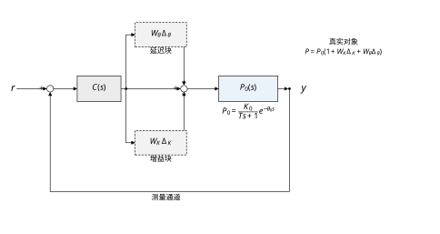
图 63-1 里，W 与 \Delta 串在对象的前向通道上，K(s) 是控制器。判据要回答的问题是：当 \Delta 在单位球里任意游走时，闭环极点会不会跑到右半平面去。
权重 W 从哪来？本章用两个区间直接算。增益的相对误差半径是
w_K=\max\left(\frac{K_{\max}}{K_0}-1,\;1-\frac{K_{\min}}{K_0}\right)=0.500 \tag{63-3}
延迟的误差则不是加减关系，它进入的是 e^{-j\omega\theta} 这个相位因子。取 \theta=\theta_0+\Delta\theta、|\Delta\theta|\le0.5 s，两块相除得到
\bigl|e^{-j\omega\theta}-e^{-j\omega\theta_0}\bigr| =\bigl|e^{-j\omega\Delta\theta}-1\bigr| =2\bigl|\sin(\omega\Delta\theta/2)\bigr| \tag{63-4}
这个式子说明延迟误差的“半径”随频率增长，低频几乎为零、高频以 \omega\Delta\theta 的速度线性上升。这一点和增益误差完全不同——增益误差在整个频段上是一个常数 0.500，延迟误差却是一条随频率抬头的曲线。两条曲线怎么合成一个 W，是 §63.2 要处理的技术细节，而合成的不同做法带来的保守性差别，是本章给出的第一个定量结论。
面对式 (63-2) 这种结构，历史上有三条技术路线，它们的区别只在“怎么处理 \Delta”。
第一条是小增益定理。 它把 \Delta 当成一个范数不超过 1 的黑箱，完全不看它的内部结构，直接要求“环路增益小于 1”：
\lVert W T\rVert_\infty<1 \tag{63-5}
好处是简单，一句话就能判；坏处是它把 \Delta 当成“最恶毒的任意扰动”，而实际的不确定性往往只作用在少数几个通道上，小增益定理看不见这个限制，于是给出偏保守的结论。
第二条是定量反馈理论（QFT）。 它不解析地处理 \Delta，而是把不确定性“画”出来：把参数区间里所有可能的对象频率响应都算一遍，在尼科尔斯图上形成一片“模板”（template），然后要求控制器把这片模板整体推到满足指标的边界之外。QFT 的强项是直接把性能指标画在图上——比如“所有情况下 \lvert S\rvert\le2.2”就是一条边界线，设计者用眼睛看控制器够不够。它的弱项是设计过程依赖人工试凑，模板一多（多个参数同时不确定）就非常费力。
第三条是 \mu 分析。 它试图把前两条的优点合起来：既保留 \Delta 的结构信息（哪些通道有不确定性、各自多大），又给出一个可以计算的数。结构化奇异值 \mu 的定义是
\mu_\Delta(M)=\frac{1}{\min\{\bar\sigma(\Delta):\ \Delta\in\boldsymbol{\Delta},\ \det(I-M\Delta)=0\}} \tag{63-6}
分母是“能使 I-M\Delta 奇异的最小 \Delta 有多大”，取倒数就是“离奇异还有多远”。\mu<1 意味着单位球内的任何 \Delta 都不会破坏稳定，\mu>1 意味着存在一个破坏稳定的 \Delta。\mu 的准确值一般算不出来，工程上用的是上界
\mu_\Delta(M)\le\min_{D\in\mathbf{D}}\bar\sigma\bigl(DMD^{-1}\bigr) \tag{63-7}
D 是一族与 \Delta 结构交换的标定矩阵。这个上界就是“\mu 分析”实际在算的东西。
三条路的关系可以一句话说清：小增益是 \mu 在“完全不给结构信息”时的特例，QFT 是 \mu 在“用图形代替计算”时的特例。 本章把三条都跑一遍，用同一台对象、同一组指标，让它们的保守性差别变成可以比较的数字。
教科书介绍 \mu 时，最常举的例子是“\mu 比小增益判据放松好几倍”，读完之后很容易形成一个印象：只要把结构信息喂进去，保守性就会大幅下降。 本章的实测给出的答案要冷一些。
看式 (63-2) 这个结构：增益误差与延迟误差是串在同一个点上的，它们乘在一起进入环路。对这种“两块不确定性进入同一点”的情形，结构化奇异值退化为两个半径的直接相乘：
\mu=\lVert T\rVert_\infty\cdot\Bigl[\bigl(1+w_K\bigr)\bigl(1+w_\theta(\omega)\bigr)-1\Bigr] \tag{63-8}
而小增益判据在同样的分解下要求的也是同一个式子小于 1。两式恒等。 换句话说，在这个最常见的单回路结构里，\mu 分析一个数都没放松——它不是“更好的判据”，只是“同一判据的另一种写法”。（式 63-8 方括号里那个“乘积再减一”的形式，§63.2 会说明它为什么不是简单地把两个半径加起来。）
放松确实存在，但它出现在另一个地方：鲁棒性能。把性能指标也写成 \Delta 的形式（一个虚拟的、代表“允许的最大灵敏度”的块），互联矩阵就从 1\times1 变成 2\times2，这时结构信息才真正起作用。§63.6 的实测是：未结构化的 \bar\sigma 峰值 1.7194，\mu 上界峰值 1.6456，比值 1.411——也就是说 \mu 只放松了约 4%，远不是教科书举例里常见的数倍。
这个结论的工程含义很直接：如果你的不确定性只有一块、或者几块都挤在同一个信号点上，那么做 \mu 分析是白费力气，小增益判据给出的数一模一样。 \mu 值得做的场合是“多通道、性能与稳定同时约束”，也就是回路数大于一、或者要把灵敏度指标一起算进去的时候。判断这件事只需要看互联矩阵的维数，不需要任何计算。
\mu 判据是充分条件，所以它保守。保守的代价是性能——为了让 \mu 小于 1，设计者必须把带宽压低，而带宽就是“回路能多快”。这条代价曲线不是线性的，它有一个悬崖。
实验 4b 在固定约束（最坏 \lvert S\rvert\le2.2、高频环路增益 \lvert L(2)\rvert\le0.5）下，把二阶控制器族的穿越频率 \omega_c 逐档抬高，记录能达到的最坏灵敏度峰值：
| \omega_c /(rad/s) | 0.17 | 0.23 | 0.28 | 0.33 | 0.38 | 0.43 | 0.48 | 0.53 | 0.58 |
|---|---|---|---|---|---|---|---|---|---|
| 最坏 \lvert S\rvert | 1.377 | 1.520 | 1.683 | 1.941 | 2.798 | 3.131 | 4.976 | 8.348 | 21.786 |
表 63-2 穿越频率与可达最坏灵敏度的代价关系（2 阶族）
从 0.17 抬到 0.33，最坏 \lvert S\rvert 从 1.377 涨到 1.941，涨了 41%，还算温和。再抬到 0.38 就跳到 2.798，0.58 直接到 21.786。拐点在 \omega_c\approx0.33 附近，约等于 0.35\,\omega_b（\omega_b=0.15 rad/s 是灵敏度权重的带宽参数，见 §63.2）。
这条悬崖的解释在相位上。延迟误差在高频段提供的相位不确定性约为 \omega\Delta\theta，\omega=0.33 时是 0.165 rad，还压得住；\omega=0.58 时是 0.29 rad，加上对象本身的相位滞后，最坏点的相位裕度被吃光，控制器只能靠“提高增益硬顶”，而高增益又把灵敏度峰值顶上去，两头一起恶化。
所以“鲁棒设计能要多快”有一个硬答案：要不到 0.35\,\omega_b 以上。 这个数是本章用同一台对象、同一组约束扫出来的，换对象要重扫，但“存在悬崖、悬崖位置由延迟不确定性决定”这个结构是普遍的。
前面几节都在说保守的坏处，容易得出“保守是坏事”的印象。反过来看一次同一条对照：激进 PI 与鲁棒二阶控制器（(k_p,T_i,z,p)=(2.40,10,0.40,0.10)）在四个顶点上的阶跃表现。
| 顶点 (K,\theta) | 激进 PI 超调 | 激进 PI \max\lvert y\rvert | 鲁棒二阶超调 | 鲁棒二阶 \max\lvert y\rvert |
|---|---|---|---|---|
| (1.2, 0.5) | 8.58% | 1.086 | 7.56% | 1.076 |
| (1.2, 1.5) | 40.72% | 1.407 | 15.29% | 1.153 |
| (3.0, 0.5) | 18.26% | 1.183 | 12.27% | 1.123 |
| (3.0, 1.5) | 4626.75% | 50.462 | 41.65% | 1.417 |
表 63-3 两个控制器在不确定性区间四个顶点上的阶跃响应
在三个顶点上，鲁棒二阶的超调都比激进 PI 更低或相当，代价是调节时间从 12 s 量级拉长到 20 s 量级。到了第四个顶点，激进 PI 发散，鲁棒二阶的超调 41.65%、峰值 1.417。保守性买到的是“最坏那一点上不崩”。
300 组随机参数（K、\theta 在区间内均匀取样，seed=63）给出了同一结论的统计版本：激进 PI 有 56.3% 的样本灵敏度峰值越界 2.2，鲁棒二阶是 0.0%；灵敏度峰值的 95% 分位数分别是 15.379 与 1.901。
这也解释了为什么现场对“鲁棒”这个词常常有抵触：它的收益全部落在尾部，而尾部平时看不到。 一个回路一年可能只在某个极端工况下进入最坏点一次，那一次会不会停机，取决于当初设计时有没有为它留出余量。鲁棒设计做的就是这笔保险，保费是常态下的响应速度。
后面的安排是：§63.2 建立乘性不确定性、权重合成、小增益、\mu 与 D 标定这一套数学，重点讲清“两块进入同一点时 \mu 退化”的来由；§63.3 把它压成六步设计流程；§63.4 讨论连续情形的频域设计与 QFT 边界；§63.5 给离散实现与采样周期的选择；§63.6 用实测数据回答“稳不稳、性能掉多少、\mu 有多保守”；§63.7 逐个解释 K、\theta、W、\omega_b、M_S 的作用；§63.8 给调参顺序与一次完整实录；§63.9 讲 \mu 综合、H_\infty 与降低保守性的几条改进路线；§63.10 讲不确定性建模的工程方法与控制器复杂度的取舍；§63.11 划边界；§63.12 给可复现代码。
一句话概括本章的立场：鲁棒控制的产出不是一个更聪明的控制器，而是一张“最坏情况下会怎样”的地图。 这张地图告诉你三件事——稳定边界在哪、性能能要到多高、以及为这两者要付多少速度。它不保证常态下跑得最快，但它保证你不会在某个没想到的角落里翻车。
这三个误会几乎每次技术讨论都会出现，先把它们拆掉，后面的数学才不会被误读。
误会一：鲁棒性等于抗干扰。 两者不是一回事。抗干扰说的是“外部扰动进来，回路能压掉多少”，它由灵敏度函数 S 在扰动频段的幅值决定，本质是一个性能问题；鲁棒性说的是“对象本身和我以为的不一样，回路还成不成立”，它由补灵敏度 T 与误差权重 W 的乘积决定，本质是一个生存问题。本章的对象在没有扰动、没有噪声的纯阶跃下就可能发散（激进 PI 在最坏顶点就是这样），此时抗干扰指标完全无从谈起。反过来说，一个抗干扰很好的慢回路可能在参数漂移下悄悄失去稳定裕度——它平时“看起来很好”，直到某天换了一批原料。两条指标要分开算、分开看，这是本章把 \lvert S\rvert 与 \mu 并列列出的原因。
误会二：\mu 是“更高级的判据”，所以一定更松。 §63.1.4 已经给出了反例：在“两块串在同一点”的结构里，\mu 与小增益判据逐字相同。这件事的根源不在数值计算，而在结构——\mu 的全部本事来自 D 标定能把不同信号点上的块“折算”开，若所有块本来就叠在同一个标量因子上，D 里只剩一个标量，折算了等于没折算。本章最终的实测把这条说得很死：2\times2 的鲁棒性能矩阵确实带来了放松，但峰值处只有 4.5%。判据的“高级”程度不决定放松多少，结构的“分散”程度才决定。
误会三：既然保守，那就把余量再放大一点更安全。 保守不是免费的，它的价格写在那条代价曲线上：\omega_c 从 0.17 抬到 0.33，最坏 \lvert S\rvert 只涨 41%；可一旦越过 0.33 的拐点，同样的增益增量换来的是 2.798、8.348、21.786 这样的跳变。反方向也一样：为了把某个裕度再放大 10%，往往要把带宽压掉三成，常态性能直接退一档。余量要按“能算清的保守量”给，不是按“心里踏实”给。 本章的做法是每一处保守都标出数字——磁盘宽 40%–60%、\mu 判据保守 66%、\mu 相对 \bar\sigma 只放松 4.5%——数字摆出来之后，“再加一点”这种冲动才有讨论的基础。
把这三个误会拆掉，本章剩下的工作就是一件事：把“不确定”从一句形容词变成一组可以代入的数字，然后诚实地把最坏情况算出来。
频域里的鲁棒性判断有四条路，它们不是互相替代的新旧方法，而是四级台阶，每往上一级就多问一个问题。
第一级：相位裕度与增益裕度。 它只问一件事——把增益乘大多少倍、把相位再拖后多少度，回路开始振。两个数都是单个工作点上的读数，默认对象就是标称那个。这一级的成本几乎为零，第 44 章的整定口诀全部建立在这一级上。
第二级：磁盘加小增益。 它多问一句：如果对象不是一个点而是一片，最坏那片会不会顶到临界点？做法是把参数区间折成一个半径 w(\omega)，再要求 \lvert T\rvert w<1。这一级第一次把“不确定性有多大”变成了一个可以填进公式的数字，代价是要先接受一个模型（乘性误差），也要先接受一个可能偏宽的包络——本章 §63.2.2 那个 40%–60% 的保守量就产生在这里。
第三级：\mu 与结构。 它再问一句：这些不确定性是不是各自独立的？如果是，能不能把它们的“最坏方向”分开算，从而少保守一点？这一级需要把回路画成 M-\Delta 互联，需要 D 标定，也需要接受“上界不等于真值”这件事。本章实测的收获只有 4.5%，但收获小不等于方法错——收获小恰恰是一个可靠的结论：在这个结构里，第二级已经把能拿的都拿到了。
第四级：时域与统计复核。 前三级都是频域判据，都是充分条件，都可能保守，也都有可能在网格之间漏掉东西。第四级用顶点阶跃和随机抽样把结论验一遍，它不产生新的判据，只负责“证明前面没有算漏”。本章 300 组随机里激进 PI 越界 56.3%、鲁棒设计 0.0%，这个对比就是第四级给出的最终裁决。
四级台阶的关系可以这样记：第一级看一个点，第二级看一片，第三级看一片里各块的独立性，第四级看这片在时间轴上真正会发生什么。 越往上，模型要求越多、算得越慢，换来的确定性也越具体。工程上不需要每章都爬到顶——本章最后停在第三级做设计、用第四级验收，这就是一个够用的组合。
把本章的激进 PI 当成一个“只做标称设计”的样本，走一遍它会遇到的三个月。
设计阶段。 工程师在标称点（K=2.0、\theta=1.0）上调参，目标是“响应快一点”。k_p=1.8、T_i=3 给出标称穿越频率 0.76 rad/s、相位裕度 37.3°、标称曲线看上去还能接受——放在投运报告里，这是一份不错的整定。
第一个月，一切正常。 负荷稳定、管道新、K 就在 2.0 附近。趋势上看不出任何问题。
第二个月，负荷上来。 K 从 2.0 涨到 2.6，回路增益相应涨 30%，等效于把 k_p 推到 2.34。这个等效增益落在表 63-10 里 2.20 与 3.20 之间，那一带的阶跃峰值已经是 50.214 与 53.330——不是“超调偏大”，而是持续振荡。操作工的反应通常是“把设定值改小一点”，波形看上去被压下去了，但回路仍在边界外面。
第三个月，管道结垢，\theta 从 1.0 涨到 1.3。 \omega_c\theta 从 0.76 涨到 0.99 rad，相位再掉 13°，两个方向的不利变化叠在一起。本章实验 7 的实测是：这个控制器在 K=3.0、\theta=1.5 顶点上超调 4626.75%，峰值冲到 50 以上，等于开环。300 组随机参数里有 56.3% 的样本最坏 \lvert S\rvert 超过 2.2——也就是说，这个设计在参数空间里“多半不合格”，只是标称那一点恰好合格。
事后看，三个判断都错了。 第一，把标称指标当成了全工况指标——标称 37.3° 的裕度，被延迟那十几度吃掉之后所剩无几。第二，把最坏工况当成了“极端情况”——高负荷加结垢是每年都要出现的常态组合，不是事故。第三，把“调设定值”当成了解决办法——它压住的是症状，回路仍然在边界外面运行。
换成鲁棒设计，代价是什么？ 本章的答案很具体：最坏顶点超调 41.65%、调节时间 22 s，而激进 PI 在最好的顶点上只要 12 s。用慢一倍换“不会崩”，这就是全部的交易。 这笔交易划不划算，取决于这条回路停一次要损失多少——这正是 §63.11.5 第一题要问的。
需要说明的是，这段推演不是某个工厂的真实事故，而是本章那三个候选控制器的完整画像按时间顺序排开。它想说明的只有一件事：标称设计与鲁棒设计的分歧不在数学，而在“你打算为哪一天做设计”。
§63.1 用的是“参数区间”的说法，判据要用的是“传递函数的误差”。两者之间的桥是乘性误差：
E_m(j\omega)=\frac{P(j\omega)-P_0(j\omega)}{P_0(j\omega)} \tag{63-9}
把式 (63-1) 代入，T 与 s 都约掉，只剩两个参数：
E_m(j\omega)=\frac{K}{K_0}e^{-j\omega(\theta-\theta_0)}-1 \tag{63-10}
这一步很关键：时间常数不进入乘性误差。T 的偏差只改变 1/(Ts+1) 这个因子，而它在分子分母里同时出现，比值里被消掉了——除非把 T 也放进不确定集，那时 E_m 里会多出 \frac{T_0s+1}{Ts+1}-1 一项。本章把 T 固定，正是为了让式 (63-10) 里只剩“增益比”和“相位差”两件事，便于把几何关系看清楚。
式 (63-10) 是一个复平面上的映射：K/K_0 在 [0.6,\,1.5] 上取值，e^{-j\omega\Delta\theta} 在单位圆上转过 |角度|\le\omega\cdot0.5 的一段弧。所有可能的 E_m 构成一个“扇形环”，我们要用一个以原点为圆心、半径 w(\omega) 的圆盘把它整个盖住。这个 w(\omega) 就是不确定性权重。
盖住的方法至少有两种，看上去都合理。
第一种是半径直接相加。 把增益误差看成半径 w_K=0.5 的圆盘，把延迟误差看成半径
w_\theta(\omega)=2\left|\sin\frac{\omega\Delta\theta}{2}\right| \tag{63-11}
的圆盘，两块“并联”就得到 w_{\text{lin}}=w_K+w_\theta。
第二种是把两块乘起来。 因为真实的误差是式 (63-10) 这种乘积形式，用三角不等式拆：
\bigl|(1+\delta_K)e^{-j\varphi}-1\bigr| =\bigl|(1+\delta_K)(e^{-j\varphi}-1)+\delta_K\bigr| \le(1+w_K)w_\theta+w_K \tag{63-12}
于是 w_{\text{prod}}=(1+w_K)(1+w_\theta)-1。
两者的区别是乘法还是加法。w_{\text{prod}}-w_{\text{lin}}=w_Kw_\theta，差的就是那个交叉项。哪个更好，取决于交叉项该不该算。实测把答案摆在表 63-4 里。
| \omega /(rad/s) | 真实最大半径 | 线性磁盘 w_{\text{lin}} | 乘积磁盘 w_{\text{prod}} | w_{\text{lin}}/真实 | w_{\text{prod}}/真实 |
|---|---|---|---|---|---|
| 0.05 | 0.5009 | 0.5251 | 0.5377 | 1.048 | 1.073 |
| 0.20 | 0.5148 | 0.6002 | 0.6503 | 1.166 | 1.263 |
| 0.50 | 0.5855 | 0.7487 | 0.8730 | 1.279 | 1.491 |
| 1.00 | 0.7839 | 0.9929 | 1.2394 | 1.267 | 1.581 |
| 2.00 | 1.2714 | 1.4544 | 1.9316 | 1.144 | 1.519 |
| 5.00 | 2.3788 | 2.3989 | 3.3484 | 1.008 | 1.408 |
| 6.28 | 2.5000 | 2.5000 | 3.5000 | 1.000 | 1.400 |
| 10.00 | 2.4965 | 1.6969 | 2.2954 | 0.680 | 0.919 |
表 63-4 真实误差半径与两种磁盘模型的覆盖性（\omega 单位 rad/s）
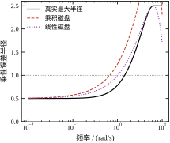
读这张表要先看一个此前容易被忽略的事实：线性相加在中频段确实更紧，但它不是上界。
在 \omega=1 附近，线性磁盘比真实半径大 27%，乘积磁盘大 58%。看起来线性磁盘“保守性小得多”，很多教材也是这么推荐的。但“更紧”和“有效”是两件事：线性磁盘的紧是靠运气——它把增益误差与相位误差当成两笔互不相干的开销去相加，而式 (63-10) 显示它们是相乘的。当相位误差很小（低频）时，两者数值接近；当相位误差变大，交叉项 w_Kw_\theta 就不可忽略，线性相加开始低估。
低估从 \omega\Delta\theta>\pi 开始变得严重。\Delta\theta=0.5 s 对应 \omega=6.28 rad/s，表里这一行线性磁盘恰好等于真实半径（两者都是 2.5），再往上走就系统性失守：\omega=10 时线性磁盘只到真实半径的 68%，低估了 47%。
乘积磁盘的表现是另一回事。它在 \omega\le6.28 的整段上都是有效上界，代价是最坏处宽了 58%。到了 \omega=10，它也只到真实半径的 92%——这一处不是磁盘模型本身的问题，而是式 (63-11) 的适用范围问题：2|\sin(\omega\Delta\theta/2)| 是“相位差走到端点时的误差”，只有当 \omega\Delta\theta\le\pi 时它才等于“整段弧上的最大误差”；一旦弧长超过半圆，区间内的最大值封顶在 2，公式却继续按正弦往下走。把式 (63-11) 里的正弦项在外面套一个“与 1 取小”（即 w_\theta=2\min\{|\sin(\omega\Delta\theta/2)|,1\}）就处处正确了。本章的代码用的是未封顶的版本，因为设计带宽在 0.33 rad/s 量级，\omega\Delta\theta 只有 0.17，离 \pi 差 18 倍；表里 \omega>6.28 的两行是为了把失效机理摊开给人看才保留的。
结论落在工程选择上：用乘积磁盘，不要用线性相加。 它在关心的频段内严格有效，多付的 40%–60% 余量远比“低估 47%”安全。如果嫌它太宽，正确的降保守性办法不是换成加法，而是把延迟误差单独作为一个块处理——这正是 §63.2.5 与 §63.6 要讨论的结构化路线。
有了 w(\omega)，稳定判据就可以写出来。闭环特征方程是 1+P_0(1+W\Delta)C=0，整理成“1+某某\cdot\Delta=0”的形式：
1+W\Delta\cdot\frac{P_0C}{1+P_0C}=0 \quad\Longrightarrow\quad 1+W T\Delta=0 \tag{63-13}
小增益定理说：如果 \lVert WT\rVert_\infty<1，那么对任意 \lVert\Delta\rVert_\infty\le1，式 (63-13) 都不会有右半平面根。理由很直接——1+WT\Delta 的零点等价于 -1/(WT) 是 \Delta 的取值，而后者模不超过 1，前者模大于 1，两者碰不上。
写成频率逐点形式更便于画图：
\lvert W(j\omega)T(j\omega)\rvert<1,\qquad \forall\omega \tag{63-14}
判据的几何意义是“T 的 Nyquist 曲线必须落在半径 1/|W| 的禁区之外”。禁区随频率变化，在高频处半径变小（W 变大），所以高频段是主要战场。
小增益定理是充分不必要的。它把 \Delta 当成“可以任意挑方向的复增益”，而真实的不确定性往往只能沿某几个方向走。这个“方向限制”就是结构信息，用它可以把判据放松——但能不能放松，要看结构长什么样。
把 \Delta 换成一个有内部结构的块对角矩阵
\boldsymbol{\Delta}=\bigl\{\mathrm{diag}(\delta_1I_{r_1},\dots,\delta_mI_{r_m},\Delta_1,\dots,\Delta_f):\ \lVert\Delta_i\rVert\le1\bigr\} \tag{63-15}
其中 \delta_i 是标量块（重复标量），\Delta_i 是满块。结构化奇异值定义为
\mu_{\boldsymbol{\Delta}}(M)=\frac{1}{\min\{\bar\sigma(\Delta):\ \Delta\in\boldsymbol{\Delta},\ \det(I-M\Delta)=0\}} \tag{63-16}
若集合为空（任何单位球内的 \Delta 都不能让 I-M\Delta 奇异），约定 \mu=0。这个定义的读法是：\mu 是“到最近一次奇异”的距离的倒数。\mu=0.5 意味着要把 \Delta 放大两倍才能破坏稳定；\mu=2 意味着单位球里就有一个破坏稳定的 \Delta。
\mu 的精确值一般算不出来（它是 NP 难的），工程上用上下界夹：
\max_{U\in\mathbf{U}}\rho(UM)\le\mu_{\boldsymbol{\Delta}}(M)\le\min_{D\in\mathbf{D}}\bar\sigma\bigl(DMD^{-1}\bigr) \tag{63-17}
上界里的 D 是与 \Delta 结构交换的正定对角阵集合，\mathbf{D}=\{\mathrm{diag}(d_1I_{r_1},\dots,d_mI_{r_m},I):\ d_i>0\}。它之所以能放松，是因为 D\Delta=\Delta D，于是 \det(I-M\Delta)=\det(I-DMD^{-1}\Delta)，把 M 换成 DMD^{-1} 不改变奇异性的存在性，但改变了 \bar\sigma。
这个“能换”就是全部的技巧所在。如果 M 只有一个标量块，\mathbf{D} 里只有一个标量 d，dMd^{-1}=M，换了个寂寞，上界退化为 \bar\sigma(M)——这就是 §63.1.4 那个结论的来源。
下界用幂迭代算，本章代码没有实现，只写上界。这一点必须说清楚：本章所有“\mu”字样指的都是式 (63-17) 的右端，是一个上界，因此所有“\mu<1”的结论都是保守的，而“\mu>1”的结论才是确定的。
现在把 §63.1.4 的论断证出来。考虑增益误差与延迟误差串在同一处，即
P=P_0(1+\delta_K)e^{-j\varphi},\qquad |\delta_K|\le w_K,\ |\varphi|\le\omega\Delta\theta \tag{63-18}
把式 (63-18) 与式 (63-10) 对照可知，这两个“块”其实是同一个乘性因子的两个来源，合起来仍然是一个标量因子
1+E_m=(1+\delta_K)e^{-j\varphi} \tag{63-19}
它落在复平面上的一个单连通区域里（扇形环），而这个区域可以被一个半径 w_{\text{prod}} 的圆盘盖住。也就是说，无论把 \delta_K 与 \varphi 看成两块还是一块，进入环路的都是一个复数，其模不超过 w_{\text{prod}}。
对单个标量块，\mathbf{D}=\{d>0\}，DMD^{-1}=M，于是
\mu= \min_{d}\bar\sigma(dMd^{-1})=\bar\sigma(M)=\lvert T\rvert\cdot w_{\text{prod}} \tag{63-20}
与小增益判据式 (63-14) 完全一致。结构信息在这里没有换来任何放松，因为“两块”本来就是“一块”。
反过来说，什么时候结构信息才有用？当不确定性出现在不同的信号点上时。两个例子：多变量系统里 P_{11} 与 P_{22} 各有误差，它们进入环路的位置不同，M 不再是秩一，\mathbf{D} 的作用才显现；以及鲁棒性能——性能指标是“加在输出上的一个虚拟块”，它与对象误差块处在不同的位置，M 变成 2\times2。
这条判据很好用：数一数不确定性块进入 M 的方式，如果所有块都是“同一个标量因子”的不同来源，就别做 \mu 了，小增益给出的数一模一样。 这是本章最省时间的一条经验。
“稳定”只是底线，工程上真正要问的是“最坏情况下性能还剩多少”。鲁棒性能的标准做法是把性能指标也写成一个 \Delta 块。
设要求所有情况下灵敏度峰值不超过 1/\gamma，即
\lvert W_S(j\omega)S(j\omega)\rvert\le\gamma,\qquad\forall\omega,\ \forall\Delta \tag{63-21}
W_S 是性能权重，1/\gamma 是允许的峰值。把式 (63-21) 反写成“1-W_S S\Delta_P 可逆”的形式，\Delta_P 是虚拟的性能块，\lVert\Delta_P\rVert_\infty\le1/\gamma。于是整个系统变成两个块的互联：对象误差块 \Delta（真实存在）与性能块 \Delta_P（虚拟，代表指标）。
用下线性分式变换把 P、C、W、W_S 全部吸收进 M，得到 2\times2 的互联矩阵。本章的对象与权重下，四格是
M=\begin{bmatrix} W_S S & -W_S S\,P\,w_m\\[2pt] C S & -T\,w_m \end{bmatrix} \tag{63-22}
其中 w_m 是式 (63-12) 的乘积磁盘，S=1/(1+P_0C)、T=P_0C/(1+P_0C)。四格的来历值得逐个说清：
鲁棒性能的判据是 \mu_{\boldsymbol{\Delta}}(M)<1，其中 \boldsymbol{\Delta}=\mathrm{diag}(\Delta_P,\Delta)，\Delta_P 是满块、\Delta 是标量块，所以
\mathbf{D}=\left\{\mathrm{diag}(d,1):\ d>0\right\} \tag{63-23}
只有一个自由度 d。代码在 10^{-3} 到 10^{3} 之间取 61 个对数点扫这个 d，逐频点取最小值，得到 \mu 上界曲线。
\mu(M)<1 的含义可以拆成两句话：\mu<1 说明“稳定 + 性能”两个要求同时被满足；而 \bar\sigma(M)<1 只是它的一个充分条件。两者的差就是结构信息买到的放松，§63.6 会给出实测：1.7194 对 1.6456，比值 1.411。
请注意式 (63-22) 里 M_{11} 与 M_{22} 的量纲不同：M_{11} 是“性能块”到“性能块”的增益，无量纲；M_{22} 也是无量纲。这正是 D 标定要处理的问题——d 的作用就是把两个块“折算到同一量纲”再取最大奇异值，从而避免把 apples 与 oranges 直接相加。
W_S 的选择决定了“什么叫性能好”。本章用一阶形式
W_S(s)=\frac{s/M_S+\omega_b}{s+A\,\omega_b},\qquad M_S=2.0,\ \omega_b=0.15,\ A=0.02 \tag{63-24}
三个参数的几何意义很清楚：
A 控制低频增益的“陡度”：A 越小，低频段越平、要求越狠，同时相位滞后越大。A=0.02 是本章刻意选的激进值，它让低频要求接近积分器行为，从而把“带宽能不能做上去”这件事逼到极限。
把式 (63-24) 与式 (63-21) 合起来看，\lvert W_S S\rvert\le1 等价于 \lvert S\rvert\le1/\lvert W_S\rvert，也就是一条随频率变化的灵敏度上限。这条上限在低频很紧（0.04），在 \omega_b 处放宽到 0.5，在高频放开。设计的工作就是让 \lvert S\rvert 曲线钻到这条上限下面，同时对所有参数组合都成立。
判据是“给定控制器，算 \mu”。设计是反问题：“找控制器使 \mu<1”。直接求解很难，工程做法是 D-K 迭代：固定 D 求 K（这是一个 H_\infty 问题），再固定 K 求 D（逐频点解一个凸问题），来回几次直到 \mu 不再下降。
D-K 迭代的两个已知毛病值得提前说：它只保证收敛到局部最优，且次数多了控制器阶数会膨胀（每次求 D 都是频率逐点拟合，拟合阶数随迭代上升）。本章不展开 \mu 综合的实现，§63.9 只讲它的工程替代方案：在低阶控制器族里做参数搜索，用 \mu 当评价函数。实验 4 的三族扫描就是这么做的——枚举 k_p,T_i,z,p，对每个候选算最坏 \lvert S\rvert 与 \mu，再挑满足约束的最大带宽。这种做法牺牲了最优性，但保住了“控制器是二阶、现场能维护”这一条硬约束。
这一节的公式看起来零散，其实是一条从“参数区间”到“一个数”的单向链，中间没有分叉。把本章的具体数字代进去走一遍，可以一次性看清每个环节各自贡献了什么。
第一环，参数区间变成两个标量。 式 (63-3) 给出 w_K=0.500；式 (63-4) 给出一个随频率变化的 w_\theta(\omega)=2|\sin(0.25\omega)|。到这一步，“不确定”已经被压缩成两条曲线，与环路无关，可以提前算好放在那里。
第二环，两条曲线合成一条磁盘半径。 式 (63-12) 的乘积形式给出 w_{\text{prod}}=(1+w_K)(1+w_\theta)-1。在穿越频率 \omega_c=0.33 rad/s 处，w_\theta=2\sin(0.0825)=0.1648，于是 w_{\text{prod}}=1.5\times1.1648-1=0.7473——比增益单项的 0.500 宽了 49%，多出来的 0.247 全部来自延迟与增益的交叉项。这个数在整条链里只出现一次，却决定了后面所有判断的松紧。
第三环，磁盘乘上补灵敏度。 式 (63-14) 的逐频点形式 \lvert W T\rvert<1，在本例里就是 \lvert T(j\omega)\rvert\cdot w_{\text{prod}}(\omega)<1。\mu 的峰值不在 \omega_c，而在 0.37 rad/s：那里 w_\theta=0.1847、w_{\text{prod}}=0.7771，比穿越点又宽了 4%。峰值频率与穿越频率不重合这件事，是“只看穿越点的裕度”会误判的直接原因。
第四环，把一个频率上的判断变成全频段的判断。 逐点算完之后取最大值，得到 \mu_{RS}=0.846。此时这条链的输出就是一个标量，可以拿去和 0.9 的预算比。
第五环，把性能也塞进同一个框架。 式 (63-22) 把 W_S S 与 CS、-T w_{\text{prod}} 拼成 2\times2 矩阵，D 标定再逐频点折算出 \mu_{RP}=1.646。注意这一步没有引入任何新的不确定性信息，用的还是第二环那条 w_{\text{prod}}，只是把“性能要求”当成第三个块放了进去。
看清这条链的实际好处是定位问题：如果最终 \mu 超标，可能的入口只有三个——区间定窄了（第一环）、磁盘选错了（第二环）、性能权重提得太狠（第五环）。控制器参数只影响第三、五环里的 T 与 S，它无法改变前两环。很多“调了半天没效果”的场合，问题其实卡在设计者动不了的地方。
D 标定常被当成一个黑箱：输进去一个矩阵，吐出来一个更小的奇异值。其实它只做一件事——按行放大、按列缩小，把同一条通道两端的量级拉平。以本章最终设计（k_p=2.4、T_i=10、z=0.4、p=0.1）为例，把 M 的四个元素在四个频点上的模列出来，就看得很清楚：
低频端四个数挤在 0.33–0.55 这个窄带里，彼此只差 1.7 倍——这时无论怎么缩放，都只是把一个数换到另一个数旁边，\sigma_{\max} 基本不动。实测也正是如此：d^\ast 只比 1 偏开一格（1.259），\bar\sigma=0.8907、\mu 上界 0.8724，比值 1.021，等于没有放松。在这个频段上，取 d=1 与取 d=1.259 的差别只有 2%，怎么取都无所谓。
高频端完全变了样：\lvert M_{12}\rvert 与 \lvert M_{22}\rvert 都塌到 0.05 附近，而 \lvert M_{11}\rvert、\lvert M_{21}\rvert 还在 0.5 左右，两组差了一个数量级。此时取 d=3.98，M 变成 \begin{bmatrix}0.493 & 0.179\\ 0.149 & 0.054\end{bmatrix}，四个元素被拉到同一量级，\sigma_{\max} 从 0.774 降到 0.549——这就是 \mu 在 10 rad/s 处给出的 0.5488，比值 1.411 的来源。
由此可以读出 d^\ast 的物理含义：它不是“调参旋钮”，而是“两个块在这一频率上的量级失配程度”。 d^\ast 贴着 1 走，说明两个块本来就势均力敌，D 无从下手；d^\ast 离 1 越远，说明失配越严重，可压的空间越大。本章 d^\ast 的走向是 0.05 处 1.259、0.60 处 1.585、2 rad/s 处 1.585、10 rad/s 处 3.981，单调向外——频率越高，两个块越不成比例。
还要注意 d^\ast 是台阶状的：代码在 10^{-3} 到 10^{3} 之间取 61 个对数点，相邻两格的比值是 10^{0.1}=1.259，所以 d^\ast 只能取 1.259、1.585、1.995、2.512、3.162、3.981 这些离散值。台阶是网格的量化，不是对象的性质。 这一点在工程上有实际后果：如果峰值恰好落在两格之间，\mu 上界会被高估或低估一两个百分点，这正是 §63.7.5 给 \mu 留 10% 余量的原因之一。要判断台阶有没有影响，把 d 的网格从 61 点加到 121 点重算一遍，看峰值变不变就够了。
鲁棒设计看起来公式多，落到操作上只有六步，图 63-3 把它们串成一条线。
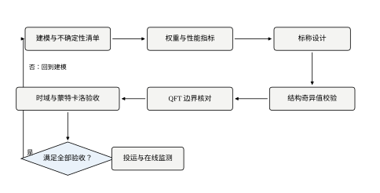
六步是：定不确定集、写性能权重、建互联矩阵、定控制器阶数预算、参数搜索、时域与统计复核。前两步是“把话讲清楚”，中间两步是“算”，最后两步是“验”。最容易出错的是第一步和第五步：第一步错，后面全错；第五步的搜索范围设错，会得出“无解”的假结论。
下面逐条说明每一步的具体动作和判据。
每个参数给出区间，然后做三件事。
第一，算相对误差半径。 增益用式 (63-3)：w_K=\max(3.0/2.0-1,\,1-1.2/2.0)=0.500。注意上下不对称时取大的一侧，+50\% 比 -40\% 更狠。
第二，判断这些误差是否落在“同一点”。 本章的对象里，增益与延迟都作用在 P_0 的输入输出比上，属于同一个乘性因子，因此按 §63.2.5 的结论，它们合成一个标量块，用乘积磁盘式 (63-12) 就够，不需要建多块结构。
第三，保底做一次网格枚举。 磁盘模型是充分条件，可能偏保守；在参数矩形上取 5\times5 的网格（K 与 \theta 各 5 点，含四个角与中间的交叉点）逐点算真实灵敏度峰值，能给出“真实最坏”的参照。本章所有“最坏 \lvert S\rvert”都是这 25 个点上的最大值。
这一步的产出是两个数：w_K=0.500、\Delta\theta=0.5 s。除此之外的东西都不要带进下一步。
性能权重回答“什么叫够好”，用式 (63-24) 的三个参数。定法是从指标倒推：
三个数一旦定下，W_S 的形状就定了，后面不再改。这一步的常见错误是把 \omega_b 定成“希望的带宽”再指望设计能满足它——W_S 是“要求”，不是“结果”，能不能满足要看第六步。本章的实测是：\omega_b=0.15 时二阶控制器只能做到 \omega_c=0.33，而 \mu_{RP} 仍然大于 1，说明这个要求偏紧。
按式 (63-22) 填四格，然后逐频点扫 d。有两个技术细节决定这一步算得对不对。
网格密度。 频率取 10^{-2} 到 10 rad/s 的 600 个对数点，d 取 10^{-3} 到 10^{3} 的 61 个对数点。d 只做量纲折算，最优值附近 \bar\sigma(DMD^{-1}) 随 \ln d 变化平缓（在最优点处是二次平坦的），所以 61 点足够；频率网格必须密，因为 \mu 的峰值是一根尖峰，点太稀会把它削掉。
峰值位置要对齐。 \mu 的峰值与 \lvert S\rvert 的峰值常常不在同一频率。本章二阶设计里，\mu 上界与未结构化 \bar\sigma 的峰值都落在 0.37 rad/s，而 \omega_c=0.325 rad/s——两个数挤在 14% 的频带内，这是“性能与稳定的矛盾集中在穿越频率附近”的典型表现。
这一步的产出是一条 \mu(\omega) 曲线和一个峰值。若峰值小于 1，设计通过；若大于 1，不要立刻放弃，先看是哪一格贡献的：若 M_{11} 主导，说明性能要求太紧（放宽 \omega_b 或 M_S）；若 M_{22} 主导，说明稳定裕度不够（降增益）。
理论上 \mu 综合能给出任意阶的控制器，工程上必须限阶。原因不是算力，是维护：三阶以上的控制器在现场要改一个参数，往往说不清会牵动什么。
实验 4 在同一组约束（最坏 \lvert S\rvert\le2.2、高频 \lvert L(2)\rvert\le0.5）下，比较三个阶数族能达到的最好结果：
| 控制器族 | 参数 | 最坏 \lvert S\rvert | 标称 \lvert S\rvert | \mu_{RS} | \mu_{RP} | \omega_c | 相位裕度 |
|---|---|---|---|---|---|---|---|
| PI（1 阶） | k_p=0.87,\ T_i=6.0 | 2.151 | 1.354 | 0.637 | 1.319 | 0.33 | 75.3° |
| PI+滞后（2 阶） | k_p=2.40,\ T_i=10.0,\ z=0.40,\ p=0.10 | 2.180 | 1.402 | 0.846 | 1.646 | 0.33 | 52.1° |
| PI+双滞后（3 阶） | k_p=0.68,\ T_i=12.0,\ z=3.00,\ p=0.75 | 2.191 | 1.465 | 0.577 | 1.764 | 0.19 | 80.0° |
表 63-5 三个阶数族在相同约束下的最好结果
这里说的“滞后”是零点频率高于极点频率的整形环节 \dfrac{1+s/z}{1+s/p}（z>p），它在中频补一点增益、在高频衰减（高频增益 p/z），与“超前”方向相反。之所以用滞后而不是超前，是因为本章的硬约束是 \lvert L(j2)\rvert\le0.5：超前会把高频增益抬上去，直接撞约束；滞后反而允许把 k_p 抬高。二阶族的高频增益是 0.10/0.40=0.25，正是靠这 4 倍衰减，k_p 才敢取到 2.40。
这张表的结论和“阶数越高越好”的直觉相反。三个族的最坏 \lvert S\rvert 都卡在 2.15–2.19，几乎没差别——因为约束就是 2.2，搜索自然把它顶到边界。真正的差别在别处：
所以本章的选择是 2 阶族：它的 \omega_c 与 1 阶族并列最高，相位裕度 52.1° 留着余量，\mu_{RS}=0.846 恰好落在 0.9 的预算内侧——既不超，也没有白白浪费余量。3 阶族的额外自由度在这里没有换来任何东西——这是“降低保守性要靠权重模型和结构，不是靠控制器阶数”的一个直接证据。
搜索的目标写成一句优化问题：
\max\ \omega_c\quad\text{s.t.}\quad \max_{\text{顶点}}\lvert S(j\omega)\rvert\le2.2,\quad \lvert L(j2)\rvert\le0.5,\quad \mu_{RS}\le0.9 \tag{63-25}
三个约束各有分工：第一条管性能（灵敏度峰值），第二条管高频（防噪声放大与未建模动态），第三条管稳定裕度（\mu_{RS}\le0.9 留 10% 余量）。
搜索的做法是网格枚举：k_p 在 [0.3,2.4] 取 12 点、T_i 在 [2,20] 取 10 点、零点 z 取 \{0.4,\,0.8,\,1.5,\,3.0\} 四档、极点固定为 z/4，二阶族共 480 个组合，每个算一次全频段指标。全部算完不到一秒，比 D-K 迭代快几个数量级，而且结果是一个每个参数都能说清含义的控制器。极点取 z/4 是刻意的偷懒：滞后整形的零极点比决定它对高频的衰减深度，固定在 4 倍上就把二维搜索降成一维，代价是放弃了“衰减更深或更浅”的那部分设计空间。
搜索有个必须注意的陷阱：约束太紧会搜出空集。 本章第一版把三条约束写成 \omega_c\ge0.40、最坏 \lvert S\rvert\le2.2、\lvert L(2)\rvert\le0.5，结果三个族全部无解。原因不是控制器不够好，而是 \omega_c 与最坏 \lvert S\rvert 在延迟不确定性下存在硬冲突（表 63-2 的悬崖）。正确做法是把 \omega_c 从约束里拿出来当目标，让它自己落到能落的水平。
频域判据全部通过，也不能直接上线。要做两次复核。
顶点阶跃。 在四个顶点上各跑一次阶跃，看超调、调节时间、\max\lvert y\rvert。本章 2 阶设计的结果是：三个顶点超调 7.56%、15.29%、12.27%，最坏顶点（K=3.0、\theta=1.5）41.65%、峰值 1.417、不发散。
蒙特卡洛。 在区间内均匀取 300 组参数（seed=63），统计灵敏度峰值与超调的分布。2 阶设计的结果是：\lvert S\rvert 峰值 95% 分位 1.901、最大 2.160、越界比例 0.0%；超调 95% 分位 33.41%。
这两次复核的分工不同：顶点检查“最坏点会不会崩”，蒙特卡洛检查“中间那些点有没有意外的坏”。本章的实测里两者一致，但工程上经常出现“顶点都好、中间某处更坏”的情形——因为最坏点不一定在参数的角上，尤其当多个参数的非线性叠加出现时。只看顶点是不够的。
把六步在同一个设计上走一遍，数字连起来看。
第 3 步与第 5 步的对照是本章最该记住的一组数：标称加权灵敏度 0.8284，鲁棒性能 \mu 上界 1.6456。 前者说“余量 17%”，后者说“超出 65%”，两个结论完全相反，原因就是前者没算不确定性的最坏方向。如果只做标称设计，会以为这个回路还有余量，实际上它已经在边界外面。
这也解释了为什么第 3 步算出来的东西不能当结论：\lvert W_S S\rvert 是标称指标，\mu_{RP} 才是最坏指标。工程报告里如果只写前者，等于报喜不报忧。
六步本身不难，难的是每一步都容易在图省事的地方悄悄走偏。本章在实跑中踩到的三处，按危害从大到小排列。
第一处，把“最坏”算在一张太粗的网格上。 本章的 worst_ms() 只在参数矩形上取 5\times5 共 25 个点，而真正的最坏点可能落在点与点之间。这不是理论上可以忽略的小事：灵敏度峰值对参数的依赖是光滑的，但峰值的位置会随参数移动，粗网格可能同时错过“位置”和“高度”。本章用两条独立路径互相印证——25 点网格给出的最坏值是 2.180，300 组随机采样给出的最大值是 2.160，两者相差 1% 以内，说明在这个对象上 25 点确实够用。但这是实测结论，不是定理：换成三参数、或者换成谐振型对象，同样的 25 点就可能低估 10% 以上。判断依据应该是“参数进入传递函数的方式是否单调”，而不是“上次 25 点也够”。
第二处，先想控制器、后想权重。 很多人拿到对象就开始试 k_p、T_i，等性能不满意了才回头改 W_S。这个顺序把两件不同性质的事混在了一起：权重表达的是“用户要求什么”，控制器表达的是“工程上能做到什么”。要求没写清就去调控制器，等于在没有靶子的情况下练习瞄准。本章的顺序是反的：先定 M_S=2.0、\omega_b=0.15、A=0.02，把“够好”定义成一个具体的频率函数，再看哪个控制器能钻到它下面。权重定完就不能为了“让结果好看”而随手放宽——真要放宽，必须记录理由，因为那是需求变更而不是调参。
第三处，复核指标与设计指标不同源。 设计阶段用的是最坏 \lvert S\rvert 与 \mu，复核阶段用的是超调、调节时间、\max\lvert y\rvert。两套指标在多数情况下同向，但并不严格同向——本章的实测里就有一个反例：激进 PI 的标称 \lvert S\rvert 只有 2.297，看起来还过得去，时域却在最坏顶点冲到 50.462；反过来，保守 PI 的 \mu_{RP}=1.703 比二阶设计的 1.646 更差，最坏超调反而略小（40.72% 对 41.65%）。所以复核不能只做“确认设计指标”，必须真的把时域跑一遍，否则频域与时域之间的那点不一致就会变成现场事故。
这三处的共同点是：它们都不违反任何公式，只在“用哪个数代替真值”上做了顺手的选择。鲁棒设计里最贵的错误，几乎都出在这种顺手的选择上。
连续域的鲁棒设计，操作上就是“把开环频率响应 L(j\omega) 整成某个形状”。形状有三段，每段对应一条要求。
低频段要高增益。 低于 \omega_b 的频段上，\lvert L\rvert\gg1，于是 S\approx1/L、\lvert S\rvert 很小，扰动被压得住。这一段的高度由积分作用决定：PI 的 \lvert L\rvert\approx k_p/(T_i\omega)，斜率 -20 dB/dec，要满足 \lvert S\rvert\le0.04 就得让 L 在低频高到 25 倍以上。本章的 A=0.02 把这条要求压得很死，实际上决定了“积分时间不能太长”。
穿越段要平缓。 \lvert L\rvert=1 附近的斜率决定相位裕度。-20 dB/dec 穿越给出约 90° 的裕度，-40 dB/dec 只剩不到 45°。本章的最终设计在 0.325 rad/s 穿越，相位是这样被吃掉的：惯性环节 -58.4°、标称延迟 -18.6°、PI 的积分 -17.1°、滞后整形 -33.8°，合计 -127.9°，剩 52.1° 裕度。延迟若取到 1.5 s，还要多扣 9.3°，裕度降到 42.8°——延迟不确定性的全部代价，就是裕度在这 9° 上摆动。
高频段要滚降。 \lvert L(j2)\rvert\le0.5 这条约束的意思是“2 rad/s 以上环路增益必须低于 -6 dB”。它防两件事：噪声通过控制器放大到执行器，以及未建模的高频动态（阀门死区、传感器滤波）被环路增益“激活”。
三条规则互相打架：低频要高、穿越要缓、高频要低，中间只有一个自由变量——穿越频率。鲁棒设计的全部张力都集中在这一个数上。
图 63-4 把表 63-1 的三个 PI 画在一起，上半是 \lvert L\rvert，下半是 \lvert S\rvert，实线标称、虚线最坏。
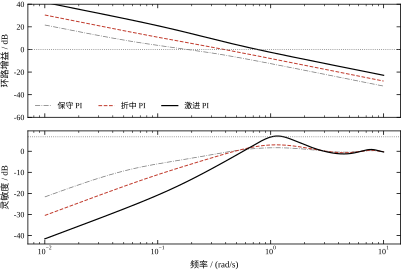
看下半张图。保守 PI 的两条曲线几乎重合（1.212 与 1.562），说明它对参数不敏感；折中 PI 的两条曲线在最坏处张开到 2.522；激进 PI 的虚线直接冲到 86.249，超出了纵轴范围。
这个“张开”就是鲁棒性差的图形表现。它的机理在上半张图里：激进 PI 的穿越频率 0.76 rad/s 处，延迟不确定性带来的相位误差是 \omega\Delta\theta=0.38 rad，最坏情况下相位曲线整体左移 21.8°，穿越点向低频滑动，同时幅值曲线在低频被抬高——两件事叠加，灵敏度峰值就被顶起来了。
一条实用判据：标称与最坏的 \lvert S\rvert 峰值之比超过 3，就不要用了。 保守 PI 是 1.29、折中 PI 是 1.78、激进 PI 是 37.5。这个比值比绝对峰值更能反映“设计对参数有多敏感”。
QFT 的做法是把“所有可能的对象”画成一片，再看控制器有没有把它们推到边界外。图 63-5 是本章设计的尼科尔斯图：横轴是开环相位，纵轴是开环增益（dB），细线是 K、\theta 在区间内变化时的对象模板，粗线是“\lvert S\rvert=2.2”对应的等值边界。
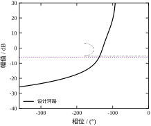
读这张图的方法：模板的每一条曲线代表一组 (K,\theta)，控制器的作用是把整片模板沿纵轴平移（增益）、并沿横轴左右整形（相位）。要求是平移整形之后，整片模板都落在 \lvert S\rvert=2.2 的边界线外侧（也就是离临界点 (-180°,0\,\text{dB}) 更远的一侧）。
这套图形语言的好处是“保守性看得见”。模板的宽度就是不确定性的代价：K 变化 1.2→3.0 让模板上下拉开 8 dB，\theta 变化 0.5→1.5 s 让它在高频端左右拉开几十度。设计者一眼就能看出“是增益不确定更难对付，还是延迟不确定更难对付”——本章是后者，因为模板在低频段很窄、在高频段很宽。
QFT 的边界是图形，判据是数字，两者要能对上。实验 6 在最终设计上逐频点提取了三个量，列在表 63-6。
| \omega /(rad/s) | \lvert L\rvert | \lvert S\rvert | \lvert T\rvert |
|---|---|---|---|
| 0.05 | 9.336 | 0.108 | 1.013 |
| 0.10 | 4.406 | 0.238 | 1.049 |
| 0.20 | 1.891 | 0.610 | 1.153 |
| 0.30 | 1.108 | 1.051 | 1.165 |
| 0.60 | 0.456 | 1.396 | 0.637 |
| 1.00 | 0.255 | 1.297 | 0.330 |
| 2.00 | 0.122 | 1.116 | 0.137 |
| 3.00 | 0.080 | 1.002 | 0.080 |
表 63-6 最终设计的开环、灵敏度与补灵敏度（标称点）
这张表有三处值得注意。
第一，\lvert T\rvert 在 0.30 rad/s 处超过 1（1.165）。 这不是错误，\lvert T\rvert 可以大于 1，超出的部分就是“谐振峰”，对应阶跃响应的超调。1.165 意味着约 16.5% 的谐振，与实测超调 15.29%（K=1.2、\theta=1.5 顶点）同量级。
第二，\lvert S\rvert 的峰值出现在 0.60 rad/s（1.396），不在穿越频率 0.33 处。 这是延迟造成的：穿越点右侧、相位已经接近 -180° 但没有越过的地方，1+L 的模最小。
第三，高频段 \lvert S\rvert\to1、\lvert T\rvert\to0，两者互补。 这是 S+T=1 的直接结果，也是“高频不能靠反馈”的数学表述——高频扰动原封不动地穿过去。
连续域设计能成立，依赖两个前提，工程上都要核查。
前提一：延迟可以用 e^{-\theta s} 精确表示。 这在频域分析里没问题（它就是 e^{-j\omega\theta}），但一旦要写成有理传递函数（比如做 H_\infty 综合），就得用 Padé 近似。一阶 Padé 给出 e^{-\theta s}\approx(1-\theta s/2)/(1+\theta s/2)，它在 \omega\theta 较大时相位误差明显；本章的频段内（\omega\theta\le1.5）一阶 Padé 的相位误差约 3°，可以接受，二阶可以压到 1° 以内。Padé 近似的阶数要和延迟的“电气长度” \omega_c\theta 匹配，这是 §63.9 要展开的一点。
前提二：控制器在连续域实现。 现场的控制器是数字的，连续设计要离散化才能落地。这一步不是“照抄”，它会把裕度吃掉一部分，而且吃掉的量与采样周期强相关——这正是 §63.5 的主题。
表 63-6 是代码算出来的，读者未必愿意信；但整条 \lvert L\rvert 曲线其实可以手算核对，代价只有三行乘法。最终设计的三个因子是
P_0(j\omega)=\frac{2}{1+j5\omega},\qquad C(j\omega)=2.4\Bigl(1+\frac{1}{j10\omega}\Bigr),\qquad H(j\omega)=\frac{1+j\omega/0.4}{1+j\omega/0.1}
\lvert L\rvert 就是三者模的乘积（延迟因子模为 1，不进幅值）。取三个频点：
三行都只差百分位以下的舍入，说明曲线没有算错，也说明这条曲线的形状完全由三个可解释的因子决定：惯性让它按 -20 dB/dec 下滑，积分让低频再陡一点，滞后整形让中频之后按 -20 dB/dec 额外衰减。读者在自己的对象上也可以用这三行核对任何一张 Bode 图——只要三个频点对得上，中间就不会有意外。
相位同样可以手算，而且更值得算，因为它决定了裕度。在 \omega_c=0.325 处，四个环节的相位分别是：惯性 -\arctan(1.625)=-58.4°、延迟 -\omega\theta_0=-0.325 rad =-18.6°、积分 -\arctan(1/3.25)=-17.1°、滞后整形 \arctan(0.8125)-\arctan(3.25)=39.1°-72.9°=-33.8°。合计 -127.9°，相位裕度 52.1°。这四项里只有延迟那一项随参数变化——\theta 从 1.0 s 漂到 1.5 s，它从 -18.6° 变成 -27.9°，裕度掉 9.3°，其余三项纹丝不动。这就是“延迟不确定性是本章主要矛盾”的最直接算法表达：它不是靠数值扫描看出来的，是相位账本上唯一会动的那一行。
图 63-5 里那条粗线看着像画出来的，其实它由三个点唯一确定，可以手算。
要求 \lvert S\rvert\le2.2，等价于 \lvert1+L\rvert\ge1/2.2=0.4545。在开环平面 L 上，这是一个以 -1 为圆心、半径 0.4545 的圆；圆内的点不合格，圆外的点合格。要在尼科尔斯图上画出它，只需三个特征点：
三点连起来就是一条闭合的小弧：相位在 155.5° 到 204.5° 之间，幅值在 -5.27 dB 到 +3.25 dB 之间。 禁区就这么大——它不是一个半平面，而是一个小小的椭圆。这条曲线之外的所有地方都满足 \lvert S\rvert\le2.2。
知道它有多大，就能理解 QFT 设计的真实难度在哪：对象模板高 8 dB、宽几十度，要把整片模板都挡在这个小椭圆之外，靠的是“增益往下压 + 相位往前提”这一对互相打架的动作。压增益会把模板整体往下推，容易从下方越过禁区；提相位要靠零点，而零点同时抬高高频增益、把模板往右拉。能够同时满足两者的控制器，就是 QFT 边界上那一小段可行域对应的控制器。
穿越点上还有一个更好用的换算。若 \lvert L\rvert=1、相位裕度 PM，则 \lvert1+L\rvert=2\sin(PM/2)，于是
\lvert S(j\omega_c)\rvert=\frac{1}{2\sin(PM/2)}
PM=52.1° 代入得 \lvert S\rvert=1.139，与表 63-6 在穿越点附近的量级一致。反过来，若要求 \lvert S\rvert\le2.2，则必须 \sin(PM/2)\ge1/4.4，即 PM\ge26.3°；若把阈值收紧到 2.0，则 PM\ge29.0°。这条换算解释了 §63.7.5 里 SMAX 为什么要取 2.2 而不是 2.0：两者只差 2.7° 的相位裕度，但可行域会窄掉一大截。
必须提醒一句：这条换算是必要条件，不是充分条件。它只管穿越点那一个频率，而本章 \lvert S\rvert 的峰值在 0.60 rad/s（1.396），根本不在穿越点 0.33 上——那里相位已经接近 -180°、环路增益还没掉够，1+L 的模最小。所以画完禁区、核完穿越点，仍然要把整条 \lvert S\rvert 曲线扫一遍，看有没有别的频率先撞线。
本章的 H(s)=\frac{1+s/0.4}{1+s/0.1} 是滞后整形：零点频率高于极点频率，高频增益是 p/z=0.25。初学者常问：滞后会吃相位（穿越点 -33.8°），为什么不用超前整形去加相位？把同一对零极点对调成 \frac{1+s/0.1}{1+s/0.4}，穿越点的相位立刻从 -33.8° 变成 +33.8°，等于白得 67.6° 裕度。
账要算全。对调之后，高频增益从 0.25 变成 4，同一个频段上的环路增益乘了 15.4 倍。表 63-6 里 \lvert L(j2)\rvert=0.122，对调后变成 1.88，而本章的高频约束是 \lvert L(j2)\rvert\le0.5——是上限的 3.8 倍，判据直接不合格。 这就是滞后与超前的本质差别：
对一个带延迟的温度回路，这两笔账的收支完全不对等。延迟已经吃掉了 -18.6°（标称）到 -27.9°（端点），对象本身再按 -20 dB/dec 下滑，环路在高频没有任何“多余的增益”可以拿来换。超前整形买来的每一度相位，都要用执行器的抖动去付——而执行器抖动的后果（阀杆磨损、噪声放大）在一个 20 秒级的温度回路上完全不值得。
那什么时候该用超前？三个条件同时成立时：延迟小（\omega_c\theta<0.2，本章标称是 0.33，已经不满足）、噪声低、且确实需要带宽（伺服、流量这类秒级回路）。第 44 章给了超前-滞后组合的整定规则与相位补偿量的算法，本章不重复，只强调一条判据：先看 \lvert L(j\omega)\rvert 在高频还剩多少余量，再决定能不能用超前把这部分余量换成相位。 余量为零的回路，超前整形是没有抵押品的贷款。
顺带一提，本章的 p=z/4 这个比例也是被高频约束逼出来的。若取 p=z/10（衰减 10 倍），高频余量更大、k_p 能再抬，但滞后更深、相位吃得更多，穿越频率反而上不去；若取 p=z/2（只衰减 2 倍），相位好看，但 \lvert L(j2)\rvert 立刻翻倍到 0.244，接近 0.5 的红线。p/z 的选择本质上是在“高频余量”与“相位”之间找平衡点，而本章的 0.25 是这条平衡线上偏保守的一侧。
连续设计搬到数字控制器上，要做的是“对象用 ZOH 保持、控制器用双线性变换”。这一步在标称情况下几乎无损——Tustin 变换在低频把 s 与 \frac{2}{T_s}\frac{z-1}{z+1} 对齐得很好。但鲁棒性会被动两处刀。
第一刀是延迟的量化。 数字实现里延迟只能是整数拍：n=\mathrm{round}(\theta/T_s)。当 \theta=1.0 s、T_s=0.2 s 时，n=5；当 \theta 在实际中漂到 1.1 s，n 仍然是 5，实现出来的延迟还是 1.0 s，误差 0.1 s。反过来 \theta 漂到 0.9 s 时也一样。延迟的实际不确定区间被“取整”改写了，它的宽度不再是 \pm0.5 s，而是“取整误差 \pm T_s/2 加上真实漂移中被取整吃掉的部分”。
第二刀是相位。 零阶保持器本身贡献 -\omega T_s/2 的相位滞后，Tustin 又在高频把相位往上拉。这两项都与 T_s 成正比，所以采样越慢，穿越点的相位裕度越小，而裕度正是鲁棒性的现金储备。
实验 8 把最终设计的连续参数固定不动，只改采样周期，在四个顶点上跑阶跃，取最坏值。
| T_s /s | 每个延迟的采样数 \theta/T_s | 最坏超调 | 最坏调节时间 /s |
|---|---|---|---|
| 1.00 | 1.0 | 93.16% | 98.0 |
| 0.50 | 2.0 | 53.01% | 29.0 |
| 0.20 | 5.0 | 50.80% | 28.6 |
| 0.05 | 20.0 | 42.33% | 22.0 |
| 0.02 | 50.0 | 41.65% | 22.0 |
表 63-7 采样周期对最坏超调与调节时间的影响（控制器参数不变）
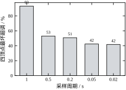
这张表有两个看点。
T_s=1.0 s 时彻底失效。 每个延迟只有 1 个采样点，超调 93.16%、调节时间 98 s。原因不是“控制器算得慢”，而是延迟的量化误差达到 \pm0.5 s——正好等于整个不确定区间的半宽。采样周期等于延迟，等于把延迟的不确定性放大了一倍。
T_s\le0.05 s 之后收益饱和。 0.05 s 与 0.02 s 的超调是 42.33% 与 41.65%，差 0.7 个百分点；调节时间都是 22 s。再快没有意义，因为此时误差的主项已经变成“连续设计本身的最坏超调 41.65%”，采样带来的额外损失被压到 1% 以内。
从这张表和相位关系可以总结出三条经验规则，本章的设计都满足。
规则一：每个延迟至少 10 个采样点。 T_s\le\theta/10，本章 \theta\in[0.5,1.5]，取下界 \theta_{\min}/10=0.05 s。这条规则保证延迟量化误差不超过 0.05 s，是 \pm0.5 s 区间宽度的 10%。
规则二：穿越频率处每周期至少 20 个采样点。 T_s\le2\pi/(20\omega_c)=0.31/0.325\approx0.97 s。这条比规则一松得多，说明本章的瓶颈是延迟量化，不是相位。
规则三：T_s 不要超过时间常数的十分之一。 T_s\le T/10=0.5 s。这条管的是对象动态被 ZOH “抹平”的程度。
三条取最紧的：T_s=0.05 s。这与实验 8 的饱和点完全吻合——规则不是拍脑袋定的，它就是那张表的拐点。
离散域的鲁棒判据与连续域一一对应，只是把 j\omega 换成 z=e^{j\omega T_s}，稳定边界从虚轴换成单位圆：
\lvert W(e^{j\omega T_s})T(e^{j\omega T_s})\rvert<1,\qquad \forall\omega\in[0,\pi/T_s] \tag{63-26}
有两点与连续不同，实现时容易踩。
频率范围只有 [0,\pi/T_s]。 连续域考虑到 10 rad/s，离散域只到 Nyquist 频率 \pi/T_s；T_s=0.05 s 时是 62.8 rad/s，够用。但若取 T_s=0.2 s，Nyquist 只有 15.7 rad/s，高频段的判据根本看不到——这不是判据失效，而是“离散系统里根本不存在那些频率”。
延迟的磁盘要按整数拍写。 离散延迟是 z^{-n}，它的误差半径是
2\left|\sin\frac{\omega n T_s}{2}\right|,\qquad n=\mathrm{round}\left(\frac{\theta}{T_s}\right) \tag{63-27}
而不是连续的 2|\sin(\omega\Delta\theta/2)|。两者的关系是：T_s 足够小、n 足够大时，nT_s 逼近期望的延迟值，式 (63-27) 收敛到连续形式；T_s 大到 \theta 只有一两拍时，n 只能在 1 和 2 之间跳，半径的取值被“锁”在几个离散值上，随 \theta 漂移发生跳变。离散化把延迟的不确定性从“连续变化”改成了“阶梯式跳变”，跳变的台阶高度正比于 T_s。 这就是表 63-7 里 T_s=1.0 s 那一行的真正原因。
落地时还有三件事，与判据无关但会决定回路好不好用。
积分要抗饱和。 鲁棒设计把增益压得较低，但阶跃时积分器仍然会积到限幅之外。本章的时域仿真里没有加抗饱和，因为对象没有限幅；现场一定要加，否则 41.65% 的超调会变成“退饱和后的二次超调”。
微分要滤波。 本章的二阶族没有微分项，但三阶族有；一旦引入微分，必须串一阶低通，截止频率取 1/(5T_s) 到 1/(10T_s)，否则噪声会被放大到执行器。
延迟要用缓冲区实现，不要用多项式近似。 n 拍延迟就是一个长度 n 的环形缓冲区，实现零成本、精度无损；用 Padé 近似反而引入额外的状态与相位误差。
把表 63-7 当成一张决策表来读，实际的选择过程只有三步。
第一步，先划出“不能用”的区域。 T_s\ge0.5 s 时最坏超调已经到 53.01%，比连续设计的 41.65% 高出 11 个百分点；T_s=1.0 s 更是直接到 93.16%。这两行不是“性能差一点”，而是“设计意图被破坏”——按 41.65% 做的整定，落地变成 93%，现场必然要求重调，而重调之后又不再满足鲁棒约束。所以 T_s 的上界必须在 0.2 s 以下取。
第二步，找“再加没有收益”的点。 从 0.2 s 到 0.05 s，最坏超调从 50.80% 降到 42.33%，改善 8.5 个百分点，值得付；从 0.05 s 到 0.02 s，只改善 0.68 个百分点。收益在这里断崖式衰减，因为量化误差 \pm T_s/2 已经从 \pm0.025 s 缩到 \pm0.01 s，相对 \pm0.5 s 的区间宽度只从 5% 缩到 2%，而连续设计本身的 41.65% 成为主项。
第三步，算一遍实现成本。 延迟缓冲区长度是 n=\theta_{\max}/T_s：T_s=0.05 s 时 n=30，T_s=0.02 s 时 n=75，内存与扫描负担按比例上升；而现场 PLC 的扫描周期通常就是 50 ms 或 100 ms，取 0.02 s 还得额外要求更快的任务周期。收益 0.68 个百分点，换 2.5 倍的缓冲区与一档硬件要求，不划算。
三步合起来，答案就是 0.05 s。这里的方法论比结论更重要：采样周期不是“越准越好”的参数，而是一条有拐点的成本曲线，拐点左边是“精度不够”，右边是“白花钱”。判断拐点位置只需要两列数——最坏超调随 T_s 的变化，以及缓冲区长度随 T_s 的变化。本章的这两列恰好都在 0.05 s 附近拐弯，这不是巧合：前者由 \pm T_s/2 与 \pm0.5 s 的比值决定，后者由 \theta_{\max} 决定，两条曲线的拐点被同一个“每个延迟 10 拍”的规则钉在了一起。
顺带说一个现场常见的情形：如果控制器任务周期被迫取到 0.1 s（比如与其他逻辑共用一个慢任务），那么应当回到连续域重新设计，而不是把 0.05 s 的设计直接搬过去。表 63-7 里 0.2 s 那一行就是这种“直接搬”的后果——超调多出 9 个百分点。重新设计的做法是把 T_s 写进不确定集，让搜索过程自己把带宽压低，这样得到的 41% 是在 0.1 s 下真实的 41%，而不是“连续设计在 0.1 s 下的残骸”。
“采样会损失裕度”这句话太笼统，实际是两份互相独立的账，混在一起就会误判该往哪儿使劲。
第一份：连续近似误差。 它由三小块组成，都可以用穿越频率处的相位直接估。
三块加起来，T_s=0.05 s 时总共约 0.5°，T_s=1.0 s 时约 9.3°。按 §63.4.6 的相位账本，原本裕度 52.1°，9.3° 吃掉后还剩 42.8°——这仍然是一个“能用”的回路。
第二份：延迟量化误差。 它没有这么温和。T_s=1.0 s 时，\theta=1.5 s 被写成 2 拍（2.0 s），\theta=0.5 s 被写成 0 拍（0 s），量化误差达到 \pm0.5 s，恰好等于整个不确定区间的半宽。也就是说，离散化把 \Delta\theta 从 0.5 直接放大到 1.0，磁盘半径在 0.37 rad/s 处从 0.777 抬到 1.05（按 §63.7.7 的同一套换算：w_\theta=2\sin(0.185)=0.368，w_{\text{prod}}=1.5\times1.368-1）。|T| 没变，\mu 却涨了 35%——表 63-7 里 93.16% 的超调，主因是这一份，不是相位那 9.3°。
两份账的工程含义完全不同：第一份只能靠“提高采样率”来还，第二份可以靠“让控制器知道真实的延迟”来还。比如把延迟做成可配置的整数拍、由工艺参数（泵速、流量）算出 n 后再写进缓冲区，那么即使 T_s=1.0 s，量化误差也不再是 \pm0.5 s，而是“估计误差”本身。这也是为什么现场调 T_s 时，先看延迟是怎么实现的，再看采样率够不够——前者往往比后者便宜得多。
前面五节讲的是“怎么算”，这一节讲“算出来的数意味着什么”。三个判据——小增益、\mu_{RS}、\mu_{RP}——加上时域实测，同一批控制器在四把尺子下的读数并不一致，而不一致的地方恰恰是最有价值的信息。
| 控制器 | 最坏 \lvert S\rvert | \mu_{RS} | \mu_{RP} | 未结构化 \bar\sigma 峰值 |
|---|---|---|---|---|
| 保守 PI | 1.562 | 0.504 | 1.703 | 1.852 |
| 折中 PI | 2.522 | 0.727 | 1.442 | 1.789 |
| 激进 PI | 86.249 | 2.029 | 3.221 | 4.930 |
表 63-8 三个控制器的稳定与性能判据读数
先看 \mu_{RS} 这一列。保守 0.504、折中 0.727 都小于 1，稳定判据通过；激进 2.029 大于 1，不通过。这一列的排序与最坏 \lvert S\rvert 的排序完全一致（1.562、2.522、86.249）。排序一致不代表两者是同一个量：\mu_{RS}=\max\lvert T\rvert w，最坏 \lvert S\rvert=\max\lvert 1/(1+L)\rvert，一个看补灵敏度、一个看灵敏度；但在“带宽越高、穿越点相位越紧”的这段范围内，两者被同一个机理推高，所以同向变化。
再看 \mu_{RP} 这一列，排序变了：保守 1.703、折中 1.442、激进 3.221。折中 PI 的鲁棒性能读数比保守 PI 更好，尽管它的稳定裕度更差、最坏灵敏度更高。这看似矛盾，其实合理：\mu_{RP} 衡量的是“在最坏方向上，性能指标还剩多少”，而保守 PI 的带宽太低（0.18 rad/s），低频段根本达不到 W_S 要求的 25 倍增益，性能缺口反而更大。
这就是鲁棒设计里最容易被忽略的一条：稳定裕度与性能裕度不是同向的。 一味保守会把 \mu_{RS} 压低、把 \mu_{RP} 推高；一味激进则反过来。两者之间有一个最优点，本章的三个候选里没有一个落在上面——折中 PI 的 \mu_{RP}=1.442 最接近，但它的 \mu_{RS}=0.727 还有余量，说明可以把增益再往上推一点。实验 4 的搜索给出的 k_p=2.40（带滞后整形）就是这个方向的产物。
教科书说 \mu 比小增益判据放松数倍。本章的实测是：峰值处只放松 4.5%，全频段上比值最大也只有 1.411 倍（图 63-7）。
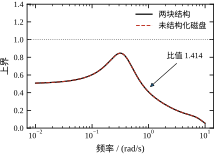
未结构化峰值 1.7194 @ 0.37 rad/s，\mu 上界峰值 1.6456 @ 0.37 rad/s。两者的形状几乎重合，只在峰值附近张开一点点。1.7194/1.6456=1.045，也就是说在真正决定设计的那一点上，完整的 \mu 分析比直接取 \bar\sigma 只多赚 4.5% 的余量。1.411 这个更大的数出现在曲线的另一段：那里 \bar\sigma 还在往上走、\mu 已经开始回落，两条曲线张开最多——但那段离峰值很远，不是设计真正在乎的地方。
看哪个数？看峰值处那个。 判据是“最大的那个频率上过不过关”，峰值处的间隙才是设计者能兑现的余量；别处的比值再大，也不改变“峰值超了”这个结论。
4.5% 值不值得做？要分两种情况。
本章的结论是：\mu 的价值不在“放松 4.5%”，而在“分清是哪一块在拖后腿”。 把 \bar\sigma 拆成 D 标定形式之后，可以逐频点看 d 的最优值：d 偏离 1 越远，说明两块的量纲越不匹配、越需要分别处理。这比“峰值超了多少”有用得多——它告诉你该改控制器还是改权重。
\mu 是充分条件，所以它预测的失稳点应该比实测更早。实验 3 把这件事量化了。
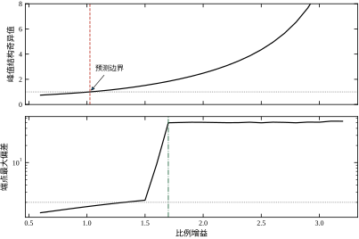
扫 k_p 从 0.6 到 3.2（T_i=3，工作点取 K=3.0、\theta=1.5 的最坏端点），\mu 单调上升，在 k_p=1.026 处穿过 1。时域里，\max\lvert y\rvert 在 k_p=1.60 处从 2.079 跳到 9.377，真正的失稳点在 k_p=1.70 附近。\mu 判据保守 66%（1.70/1.026=1.66）。
保守的来源有三个，逐条说清。
第一，\mu 上界本身不是 \mu。 式 (63-17) 的右端在有两块以上结构时会高于真值，本章的这一处只高不到 5%，但方向是对的——判据偏严。
第二，最坏方向是“逐频点”挑的。 \bar\sigma 在每个频率上独立地挑最坏方向，实际系统里 \Delta 是一个稳定的传递函数，它在不同频率上的取值受解析性约束，不可能每个频点都取到最坏。这条保守性在小增益判据里同样存在，\mu 也没能消掉。
第三，时域失稳需要“持续激励”。 频域判据说“存在某个 \Delta 使闭环不稳定”，但时域里阶跃响应能不能真的把这个不稳定激发出来，还取决于初值与输入。本章实测的失稳点 1.70 是“阶跃响应冲到 50 以上”的点，若输入更小或时间更短，可能要到 1.8 才看得出来。
这三条加起来，决定了 \mu 判据的正确用法：它不是“能不能用”的判据，而是“要不要担心”的判据。 \mu<1 一定安全；\mu 在 1.0–1.8 之间要现场验证（本章的失稳点对应 \mu\approx1.83）；\mu>2.0 基本没救。
表 63-2 已经给出了代价曲线，图 63-9 把它画出来。
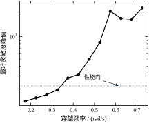
曲线有两个明显特征。\omega_c\le0.33 的段近似线性，斜率约 8（\omega_c 每涨 0.05，最坏 \lvert S\rvert 涨 0.3–0.4）；\omega_c>0.33 的段是指数的，0.58 处冲到 21.786，之后甚至不再单调（0.63 降到 17.463、0.68 降到 17.012、0.73 又升到 24.276）。
末端的非单调是搜索的副产品：在这么高的带宽区，能满足 \lvert L(2)\rvert\le0.5 的候选很少，网格稀疏，每个格点代表的参数差别很大，所以“最坏 \lvert S\rvert”随 \omega_c 上下跳。这一段的数据不可用于设计，只能用于说明“这里已经没救了”。
图 63-10 把两个控制器在四个顶点上的阶跃响应画在一起。
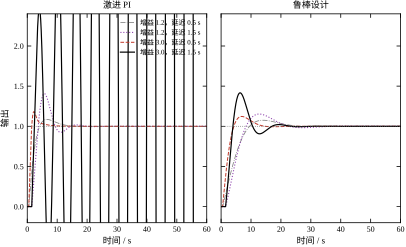
左栏是激进 PI，右栏是鲁棒二阶，四行对应四个顶点。最下面一行（K=3.0、\theta=1.5）是决定性的：激进 PI 的曲线直接冲出图外（峰值 50.462），鲁棒二阶的曲线上升到 1.417 后回落。前三行两者差别不大，甚至激进 PI 在第一个顶点上更快（12.0 s 对 22.0 s）。
这个“三好一坏”的格局正是鲁棒设计的典型形态：它不是把每一点都做好，而是把最坏那一点拉回及格线，代价是其余点都变慢。 如果现场的最坏点一年只出现一次，这笔买卖划算；如果最坏点是常态工况，那么鲁棒设计就是纯粹的损失。
图 63-11 是 300 组随机参数的累积分布。
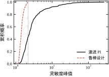
激进 PI 的分布长尾一直拖到 265.677，56.3% 的样本超过 2.2；鲁棒二阶的分布整体压在 2.2 以内，最大 2.160，越界比例 0.0%。两条曲线的 95% 分位是 15.379 与 1.901，相差 8 倍。
这张图还说明一件事：鲁棒设计的分布是“截断”的，激进设计的分布是“重尾”的。 截断分布的最大值可预测（2.160，与设计约束 2.2 吻合），重尾分布的最大值不可预测（265.677，换个种子可能更大）。对于需要写进安全评估报告的场合，“可预测的最坏值”比“平均性能高 10%”重要得多。
把本节的所有读数归拢成一张分工表。
| 判据 | 回答的问题 | 本章读数 | 什么时候用 |
|---|---|---|---|
| 小增益 \lVert WT\rVert_\infty | 最坏情况下稳不稳 | 与 \mu_{RS} 恒等 | 单块不确定性，快速筛查 |
| \mu_{RS} | 同上，但可拆结构 | 0.504 / 0.727 / 2.029 | 多块、需要知道哪块主导 |
| \mu_{RP} | 最坏情况下性能剩多少 | 1.703 / 1.442 / 3.221 | 要同时管稳定与性能 |
| 最坏 \lvert S\rvert | 最坏情况的频域性能 | 1.562 / 2.522 / 86.249 | 与现场指标对齐 |
| 顶点阶跃 + 蒙特卡洛 | 实际会怎样 | 超调 41.65%、越界 0.0% | 上线前的最终确认 |
表 63-9 四类判据的分工
用一句话概括这一节：判据越“高级”，给出的结论越保守；而最保守的那个（\mu 预测 1.026）与最贴近现实的（实测 1.700）之间差 66%，这 66% 就是“理论安全”与“实际可用”之间的距离。 设计者的工作是在这 66% 里做判断，而不是把判据当成开关。
四个候选、四把尺子摆在一起，很自然会问“哪个最好”。本章的答案不是某个控制器，而是一个次序。
先把四个候选的读数排成一张表（\mu_{RS}／\mu_{RP}／最坏 \lvert S\rvert）：
第一步，用 \mu_{RS}<1 筛掉“不稳”的。 激进 PI 的 2.029 直接被淘汰——它的问题不是“性能差一点”，而是“最坏情况下闭环会散”。这一步没有讨价还价的空间，因为它是生存判据而不是性能判据。
第二步，用最坏 \lvert S\rvert\le2.2 筛掉“越界”的。 折中 PI 的 2.522 出局。注意它在剩下的三个里 \mu_{RP} 最好（1.442），也就是说它在软指标上得分最高，却过不了硬约束。这是鲁棒设计里最常见的陷阱：如果一个候选在某张表上排第一，先确认它有没有被硬约束筛掉，再决定要不要为它惋惜。
第三步，在活下来的两个里比软指标。 保守 PI 的 \mu_{RP}=1.703、鲁棒二阶 1.646，差别只有 3.5%；但保守 PI 的穿越频率 0.18 对 0.33，慢了接近一倍。到这一步，比较的已经不是判据，而是“用户能接受多慢”。本章选二阶，理由写在性能而不是鲁棒性上：两者的鲁棒读数在同一个量级，速度差一倍。
这个次序的意义在于：硬约束是布尔量，软指标是连续量，混在一起排序必然出错。 把 \mu_{RP} 与 \lvert S\rvert 加权求和再挑最小，会选出折中 PI——一个最坏灵敏度 2.522、在真实工况下谐振明显的设计。工程上正确的做法永远是先做布尔筛选，再在剩下的集合里做连续优化。
“\mu 判据保守 66%”这句话容易让人以为整个方法的保守量来自一处。其实它由两笔完全不同的钱组成，拆开之后才看得清哪一笔能还。
第一笔：磁盘比真实参数集宽。 把 w_{\text{prod}}(\omega) 换成真实半径——即在整个 41\times41 的参数网格上逐点算 \lvert P/P_0-1\rvert 再取最大——重做同一条 \mu 曲线，临界增益从 k_p=1.026 抬到 1.543。半径的比值（真实／乘积磁盘）在几个频点是：
也就是说，在 0.3–5 rad/s 这段主力频段上，磁盘把真实半径高估了 40%–60%，这就是三角不等式那笔账（§63.2.2）。把磁盘换成网格，可以还掉 50 个百分点：1.026 → 1.543。
第二笔：判据本身是充分条件。 即使半径给得一分不差，\lVert T\rVert_\infty\cdot\max\lvert\Delta\rvert<1 仍然只保证“若成立则稳定”，不保证“若不成立则不稳定”。实测失稳点是 k_p=1.700，比真实半径算出的 1.543 又高 10%。这 10% 才是 \mu/小增益判据不可回收的保守量——它来自“最坏参数点同时取最坏相位、且沿同一方向作用”这个假设，而实际的 K、\theta 组合往往对不上这个方向。
拆完之后，两笔账的处理方式完全不同：
还有一个不能忽略的细节：10 rad/s 处比值是 1.09，磁盘在这一频点反而低估了 9%。“磁盘一定保守”是个误解——三角不等式只保证“某种组合下覆盖”，不保证逐点覆盖所有参数点。本章之所以没出事，是因为 \mu 的峰值在 0.37 rad/s，那里磁盘高估 41%，低估的频段没有参与峰值。换一个峰值落在 5 rad/s 以上的对象，就必须先核对这条比值曲线，再决定能不能用磁盘。
本章有三张图讲的是同一件事的三个面，分开看都对，合起来才有用：图 63-8 管“能不能稳”，图 63-9 管“要多快”，图 63-10 管“长什么样”。
先看图 63-9，它决定约束。 横轴是穿越频率，纵轴是这一带宽下能做到的最坏 \lvert S\rvert。曲线的拐点在 0.33 rad/s：拐点左边近似线性，斜率约 8；拐点右边指数上冲，0.58 处已经是 21.786。这张图回答的是“我最多能要到多少速度”——它不是能力上限，而是代价曲线，越过拐点之后，每一点速度都要用数量级的灵敏度去换。
再回看图 63-8，它决定余量。 横轴是 k_p、纵轴有两个量：\mu 曲线（平滑）与阶跃峰值（跳变）。读法是从右往左：先找峰值跳变的位置（1.60 与 1.80 之间），再找 \mu=1 的位置（1.026）。两个位置之间的间隔就是判据的保守量，本章是 66%。这张图告诉设计者：判据说“不行”的地方，实际还能跑；判据说“刚行”的地方，实际余量很大。
最后看图 63-10，它决定接受不接受。 四条曲线对应四个顶点，右栏的形状才是现场会看到的东西：超调 41.65%、调节时间 22 s、峰顶有 1.165 的谐振。这张图不产生任何新判据，它只回答一个问题——这样的响应，工艺能不能接受。
三张图的连接点是同一个控制器。它在 63-8 上是 k_p=2.40 的一个点，在 63-9 上是 \omega_c=0.33 附近的一个点，在 63-10 上是右栏四条曲线。正因为三张图共享同一套参数，它们才能互相印证；如果三张图分别来自三个不同的设计，拼在一起看只会得到混乱。
读图次序也有讲究。推荐的次序是“代价 → 余量 → 形态”，因为代价决定可行域，余量决定敢不敢往前推，形态决定最终签不签字。反过来读（先看形态，觉得 41% 超调太大，于是回头砍带宽）会白丢性能：41% 是在最坏顶点上的数，常态顶点的超调只有 15.29%，砍带宽砍掉的是常态性能，换来的只是最坏点那 10 个百分点的改善。
还有一条经验：三张图里只要有一张说不通，就先别签字。 常见的不通有三种——代价曲线在拐点附近来回跳、\mu 曲线在峰值附近出现锯齿、时域响应与 \lvert S\rvert 峰值对不上。它们分别指向搜索网格太粗、频率点太少、以及时域与频域用了不同的工作点。这三种问题都不会让程序报错，只会让报告里的数字看起来自洽、实际站不住。所以签字之前先问一句：这三张图，是从同一次运行里导出来的吗？
本章一共有四组参数：对象的（K、T、\theta）、不确定性的（w_K、\Delta\theta）、性能权重的（M_S、\omega_b、A）、控制器的（k_p、T_i、z、p）。它们的地位不同：前两组是“给定的事实”，第三组是“提出的要求”，只有第四组是“设计出来的”。混为一谈是初学鲁棒控制最常见的困惑。
K 只影响开环增益，在闭环里被 k_p 部分补偿，所以它本身不是难点；难点在它的相对误差 w_K。K 从 2.0 变成 3.0，误差 50%，意味着控制器必须为“增益突然大一半”留出相位裕度。
T 在本章被当作已知。实际中它是最容易被低估的参数：管壁结垢、物料黏度变化都会让 T 翻倍，而 T 从 5 s 翻到 10 s，穿越频率处的相位要从 -58.4° 变成 -73.1°，多扣近 15°。如果 T 也不确定，本章的全部结论都要重算，因为式 (63-10) 里会多出一项 \frac{T_0s+1}{Ts+1}-1，磁盘模型的形式完全变了。
\theta 是最贵的参数，贵在两处：它同时贡献相位滞后与不确定性。1.0 s 的延迟在 0.33 rad/s 处扣 18.6°，±0.5 s 的漂移再加 9.3°。延迟是带宽上限的主要决定因素：本章的悬崖出现在 \omega_c\approx0.35\omega_b，而把悬崖压在这个位置的正是 \Delta\theta。若 \Delta\theta 减半，同样的带宽只付一半的相位代价，悬崖右移；若加倍，悬崖左移。设计前先确认延迟的不确定区间，比后面调任何参数都重要。
w_K=0.500 由式 (63-3) 算出，取区间两侧的较大者。如果现场只关心“增益不会低于标称”，那么 w_K 可以取单侧 0.5，磁盘不需要对称，判据可以相应放松。
\Delta\theta 是延迟的半宽。它进入式 (63-11) 之后，在低频几乎为零、在高频线性增长，所以它对判据的贡献集中在穿越频率附近。这也是为什么“延迟不确定”比“增益不确定”更难对付：增益不确定在整个频段上均匀施压，而延迟不确定专打最脆弱的地方。
两者的合成方式（加法还是乘法）在 §63.2.2 已经量化：乘法在关心频段严格有效、代价是多 40%–60% 的余量；加法在中频更紧、但高频失效。工程上选乘法，然后接受这份保守。
M_S 是允许的灵敏度峰值，也就是阶跃响应的超调上限（近似）。M_S=2.0 对应约 6 dB 的谐振峰，实测最坏超调 41.65%，两者量级一致。它与可达带宽是直接对抗的：M_S 越小，允许的谐振越低，能通过的候选带宽越低——表 63-2 那条代价曲线就是这个对抗的剖面。
\omega_b 是性能要求的“转折频率”，可以理解成“希望闭环跟到多快”。它不等于实际带宽——本章 \omega_b=0.15，实际 \omega_c=0.33，后者是前者的 2.2 倍。这个倍数没有普遍性，但它反映了一个规律：W_S 是“要求”，实际带宽通常比它高出一截，因为 W_S 在 \omega_b 之后迅速变小，设计只要在 \omega_b 附近满足它就算过关。
A 控制低频要求的陡度。A=0.02 给出 25 倍的低频增益要求，A=0.05 只有 10 倍。A 太小会让 W_S 在低频接近积分器，设计被迫加大积分作用，相位裕度下降。A 再小一个数量级（0.002）要求就是 250 倍，控制器几乎必须做成纯积分，穿越点的相位余量会被吃光。工程上 A 很少低于 0.01。
k_p 是唯一能同时抬高“低频抑制”和“穿越频率”的参数，也是最危险的参数。实验 3 的扫描给出了它的完整画像：
| k_p | 0.60 | 1.00 | 1.40 | 1.60 | 1.80 | 2.20 | 3.20 |
|---|---|---|---|---|---|---|---|
| \mu（最坏端点） | 0.742 | 0.980 | 1.378 | 1.666 | 2.029 | 3.076 | 13.947 |
| 最坏 \lvert S\rvert | 1.320 | 1.548 | 1.857 | 2.056 | 2.297 | 2.976 | 9.867 |
| 相位裕度 /(°) | 58.5 | 51.4 | 44.7 | 41.3 | 37.3 | 29.7 | 9.9 |
| \max\lvert y\rvert | 1.313 | 1.681 | 2.079 | 9.377 | 50.609 | 50.214 | 53.330 |
表 63-10 比例增益的完整画像（T_i=3，K=3.0、\theta=1.5 端点）
这张表最值得注意的是 \max\lvert y\rvert 的跳变：k_p 从 1.40 到 1.60，这个数从 2.079 跳到 9.377，而 \mu 只从 1.378 到 1.666。时域指标是“跳”的，频域指标是“滑”的。 这就是为什么不能只看 \mu 曲线来判断“还能不能再加一点增益”——曲线上看起来平缓的一段，时域里可能已经跨过了悬崖。
T_i 决定积分作用的强弱。T_i 太小（强积分）会把相位裕度吃掉，T_i 太大会让低频增益不足、稳态误差压不下去。本章的 T_i=10 相对 T=5 是 2 倍，属于“温和”的取值：积分转折频率 1/T_i=0.1 rad/s 远低于穿越频率 0.33，对裕度影响小。
z 与 p 是滞后整形的零点与极点，只以比值 p/z 影响高频增益、以绝对位置影响相位。本章固定 p=z/4，高频衰减 4 倍；若改成 p=z/10，衰减 10 倍，k_p 可以再抬高，但相位滞后更大、带宽反而可能下降。这是一个“想要更高增益”与“想要更快”之间的交换，不是免费的。
本章用了三个阈值：SMAX=2.2（最坏灵敏度峰值）、LMAX\_HF=0.5（2 rad/s 处的环路增益）、\mu_{DES}=0.90（稳定判据的留量）。三个数都不是理论值，是工程选择。
SMAX=2.2 对应 6.85 dB，是“超调不超过 45%”的粗略换算。取 2.2 而不是 2.0，是因为本章标称峰值与最坏峰值平均差 0.78：若要求最坏不超过 2.0，标称就得压到 1.2 附近，而三个阶数族的标称最好也只到 1.354（表 63-5），可行域会窄到搜不出解。
LMAX\_HF=0.5 对应 -6 dB，是“高频不放大噪声”的经验线。取 0.5 而不是 0.2，是给滞后整形留空间：这条线越紧，越依赖更深的滞后衰减，而滞后本身吃相位，最终把可达带宽压下去。高频约束与带宽是隐性的对抗关系，不是“越严越好”。
\mu_{DES}=0.90 留 10% 余量，理由是 \mu 上界在网格上可能被低估几个百分点（频率点不够密）。判据的阈值要留出“计算误差”的余量，这是数值设计的常识。
T_s 的作用在 §63.5 已经量化：T_s\le0.05 s 之后收益饱和，T_s=1.0 s 时彻底失效。它在参数体系里的位置比较特殊——它不影响连续域的任何一个判据，只影响“设计能不能落地”。所以它必须在设计阶段就定下来，不能等控制器算完再补。
把六组参数平铺在一张表上容易造成误解，以为它们可以各自独立地调。实际上它们之间是一条严格的单向依赖链：对象参数 → 不确定性参数 → 性能权重 → 控制器参数，而阈值与采样周期是两个“旁挂”的约束，分别从上、下游切进来。
链的方向决定了“改了上游，下游全部作废”这条铁律。举一个最容易被低估的例子：把延迟上界从 1.5 s 放宽到 2.0 s，看似只是“区间画大一格”，实际后果是 \Delta\theta 从 0.5 变成 0.75，磁盘在 0.37 rad/s 处从 0.777 抬到 0.915（因为 w_\theta=2\sin(0.375\times0.37/2) 从 0.185 变成 0.277）。补灵敏度 T 没变，\mu_{RS} 却按同样比例涨 18%，从 0.846 直接到 1.0 附近——一个区间端点的改动，让原本合规的设计变成了边界设计。 这种“上游一动、下游全废”的连锁，正是 §63.10 要强调“不确定性建模必须最先冻结”的原因。
阈值与采样周期虽然旁挂，但它们切进来的位置不同：SMAX、\mu_{DES} 切在搜索环节（决定可行域的边界），T_s 切在落地环节（决定连续设计还剩多少）。前者改小一点，可行域变窄，可能直接导致“搜不出解”，这时的正确反应是重新审视权重是否要求过高，而不是把阈值放宽；后者改大一点，超调单调上升，没有回旋余地。
还有一个方向性的事实值得记住：在这条链上，设计者真正能自由摆动的只有控制器参数。 上游三组要么是事实（对象参数）、要么是承诺（权重），改动它们属于“重新立项”而不是“调参”。所以日常工作的形态必然是：上游冻结，在下游反复走——本章 §63.8.3 那五次尝试，本质上就是在同一条下游链上打转。
前一小节是定性的，这一小节给数。以本章最终设计为基准（\mu_{RS}=0.846、\mu_{RP}=1.646、\bar\sigma 峰值 1.719），把 k_p、T_i、z、p 分别乘 0.9 与 1.1，其余不动，重算三个指标：
三件事值得记住。
第一，相对灵敏度都在 0.5 以下。 参数变 10%，指标只变 1%–5%。这是好消息：现场控制器的电阻电容公差、整定软件的小数位截断，都不会把设计推翻。但它同时是坏消息——反过来说，想靠微调参数把 \mu_{RP} 从 1.646 拉回 1 以下，需要 −39% 的变化，按 0.4 的灵敏度要动 100% 的参数，等于把设计重做一遍。这个数把 §63.9 那条“改结构而不是改参数”的结论量化了：指标离合格线太远时，参数空间里没有解，只有结构空间里有。
第二，p 最便宜，z 最贵。 极点 p=0.1 落在穿越点以下一个多倍频程，\arctan(\omega/p) 在 0.37 处已经饱和到 74.9°，p 改 10% 只把它挪到 73.4°，相位差不到 2°；零点 z=0.4 恰好压在穿越点上方的敏感区，\arctan(\omega/z) 在 \omega\approx z 处的斜率最大，z 改 10% 就能动 3° 左右，还连带改掉整段高频增益。工程含义是：整定时先动极点、后动零点，因为极点的动作几乎没有副作用，而零点的每一个百分点都在改相位。这与 §63.8.2 给的三个起手值是一致的——起手时把 p 放在 z/4，就是为了让“调极点”这一步有足够的空间。
第三，\mu_{RS} 与 \mu_{RP} 同向而动。 四个参数无论往哪边偏，两个指标总是一起涨或一起落。这说明在本章这个设计点上，稳定裕度与性能裕度不再互相拉扯——拉扯发生在“换设计”的层面（保守 PI 与激进 PI 的对比，§63.6.4），而在“同一个设计的小邻域里”，所有参数的作用方向是一致的。实际影响是：在最终设计附近微调，不可能用稳定裕度去换性能裕度，想换就必须跳到另一个设计点，代价是重跑整条链。
最后提一句：这四个数都是在 0.37 rad/s 的峰值附近兑现的。换到 2 rad/s 以上，主导因素变成幅值比 p/z——在那个频段，动 p 与动 z 的作用是对称的，谁更贵取决于你往哪个方向动。“哪个参数最贵”没有全局答案，只有“在关心的频段上谁最贵”。
鲁棒调参最容易犯的错是“从性能往里挤”——先按标称设计一个足够快的控制器，再想办法补裕度。这条路在本章的对象上必然失败：标称最快的激进 PI（k_p=1.8、T_i=3）标称 \lvert S\rvert 只有 2.297，看起来不算离谱，最坏却是 86.249，已经无处可补。
正确的顺序是反过来的：从边界往里收。 四步。
第一步，用纯 PI 摸稳定边界。 固定 T_i=3（大约 0.6T），把 k_p 从 0.6 往上加，看 \mu 什么时候过 1。本章的结果是 k_p=1.026。这个数就是“最多能给多少比例增益”的第一手情报，比任何公式都可靠。
第二步，把 k_p 退到 \mu 边界的 70%。 1.026\times0.7=0.72。这个 0.7 是经验保险系数：\mu 判据本身已经偏严（本章实测保守 66%），再退 30% 是双重保险，目的是给第三步的整形留出抬升空间。退完之后，k_p=0.72 距时域实测的失稳点（1.70）还有 2.4 倍——第二步结束时的回路是“绝对安全但很慢”的。
第三步，用整形把 k_p 抬回去。 直接抬 k_p 会撞 \lvert L(2)\rvert\le0.5，所以先加滞后整形（z=0.40、p=0.10，高频衰减 4 倍），再把 k_p 从 0.72 抬到 2.40。注意这里的 k_p 是整形环节之前的原始增益：高频被衰减 4 倍，所以 2.40 在高频只剩 0.60，仍然满足约束。
第四步，扫 T_i 微调低频。 T_i 从 6 加到 10，低频增益抬高、稳态误差下降，代价是积分相位多扣几度。本章取 10 时相位裕度仍有 52.1°，可以接受。
每一步都要有个起点，本章的经验值如下。
k_p 的起点取 0.3/K_0。 0.3/2.0=0.15，比最终的 2.40 小得多，但它是“肯定不会错”的起点——从它往上加，每一步都能看到指标怎么变；从一个激进值往下退，往往一退就退过头。
T_i 的起点取 T。 积分转折频率 1/T=0.2 rad/s，接近但低于期望带宽，这是“积分不拖后腿”的自然位置。本章最终取 2T=10，是因为延迟不确定性要求更保守的积分。
z 的起点取 1/\theta_0。 延迟的倒数对应“延迟开始显著影响相位的频率”，滞后整形放在这里最有效。本章 1/1.0=1.0，而最终选的 0.40 比它低——因为实际带宽只有 0.33，整形点要跟着带宽走，不能跟着延迟走。这条修正很重要：整形的零点位置应该由带宽决定，不是由延迟决定。
下面这段是本章实际走过的弯路，值得记下来。
第一次尝试：k_p=1.80、T_i=3（激进 PI）。标称指标全部过关：\lvert S\rvert 峰值 2.297、相位裕度 37.3°、穿越频率 0.76。看起来“稍微激进但可用”。
第二次尝试：加顶点复核。K=1.2、\theta=0.5 时超调 8.58%，很好；K=3.0、\theta=1.5 时超调 4626.75%、\max\lvert y\rvert=50.462、判定发散。这一次复核就否掉了整个设计。
第三次尝试：退回保守 PI（k_p=0.6、T_i=10）。最坏 \lvert S\rvert=1.562、\mu_{RS}=0.504，全部过关，但穿越频率只有 0.18——比激进版慢 4 倍，操作工会抱怨“阀动得太肉”。
第四次尝试：在保守与激进之间找折中（k_p=1.0、T_i=6）。最坏 \lvert S\rvert=2.522，超了 2.2 的线，但 \mu_{RP}=1.442 比保守 PI 的 1.703 好。这说明“往激进方向走一点是对的，只是走过头了”。
第五次尝试：带滞后整形的二阶族（k_p=2.40、T_i=10、z=0.40、p=0.10）。最坏 \lvert S\rvert=2.180、\mu_{RS}=0.846、\mu_{RP}=1.646、超调 41.65%、300 组越界 0.0%。这才是最终设计。
五次尝试的顺序说明一件事：性能指标的“好”与鲁棒指标的“过”往往同时出现，只有把两者放在一起看，才知道该往哪个方向退。 激进 PI 的标称比折中 PI 好，但它的最坏已经越界；折中 PI 的最坏比保守 PI 差，但它的鲁棒性能读数更好。单看任何一列都会走错方向。
错误一：在标称点上调参。 本章的折中 PI 在标称点 \lvert S\rvert=1.420，看着“还有 35% 余量”，最坏已经 2.522。调参时必须始终显示最坏值，标称值只用于对照。
错误二：把 \mu_{RP}>1 当成“不能用”。 本章最终设计的 \mu_{RP}=1.646，按判据不合格，但时域 300 组越界 0.0%。原因是 \mu_{RP} 用的是 W_S 的严格形式（低频 25 倍），而实际工况对低频精度的要求没有这么高。\mu_{RP} 要结合“权重是否代表真实要求”来解释。
错误三：一味加超前。 超前能补相位，但在延迟不确定的回路里，超前同时抬高高频增益，撞上 \lvert L(2)\rvert\le0.5。本章改用滞后整形成功，原因就是它“补中频、削高频”，方向与约束一致。
错误四：采样周期后置。 先做完连续设计，最后才定 T_s，结果 T_s=0.2 s 时超调从 41.65% 涨到 50.80%。T_s 要在第一步就定，因为它改写延迟的不确定性。
错误五：只看 \mu 不看时域。 \mu 从 1.378 到 1.666 只涨 21%（k_p 1.40→1.60），同一段时域里 \max\lvert y\rvert 从 2.079 跳到 9.377（4.5 倍）。频域判据是“滑”的，时域是“跳”的；两把尺子都要看。
把上面的经验压成一张表，每次设计完逐条打勾。
| 检查项 | 判据 | 本章数值 |
|---|---|---|
| 不确定集是否覆盖真实区间 | w_{\text{prod}}\ge 真实半径 | \omega\le6.28 内覆盖 |
| 稳定判据 | \mu_{RS}<0.9 | 0.846 |
| 最坏灵敏度 | \max\lvert S\rvert\le2.2 | 2.180 |
| 高频约束 | \lvert L(j2)\rvert\le0.5 | 满足 |
| 鲁棒性能 | \mu_{RP}<1（理想） | 1.646（未达，已评估） |
| 四顶点阶跃 | 不发散、超调 <50\% | 41.65% |
| 蒙特卡洛 | 越界比例 <5\% | 0.0% |
| 采样周期 | T_s\le\theta_{\min}/10 | 0.05 s |
表 63-11 鲁棒设计验收检查表
这张表里唯一“没过”的是 \mu_{RP}。允许一项不过，但必须写明理由——本章的理由是“W_S 的低频要求 25 倍比现场实际需要更严”。如果写不出理由，就不能放行。
调参过程里最有价值的产出不是最终那组参数，而是中途被否掉的每一组为什么被否。本章那张“五次尝试”的记录之所以有用，是因为它把“哪一列救了这个设计、哪一列否了那个设计”写清楚了。建议每次设计都留一张同样格式的表，至少包含六列：
| 尝试 | (k_p,T_i,z,p) | 标称 \lvert S\rvert | 最坏 \lvert S\rvert | \mu_{RS} | 否决理由 |
|---|---|---|---|---|---|
| 1 | (1.80, 3, —, —) | 2.297 | 86.249 | 2.029 | 顶点发散 |
| 3 | (0.60, 10, —, —) | 1.212 | 1.562 | 0.504 | 太慢 |
| 4 | (1.00, 6, —, —) | 1.420 | 2.522 | 0.727 | 灵敏度越界 |
| 5 | (2.40, 10, 0.40, 0.10) | 1.402 | 2.180 | 0.846 | 采用 |
表 63-12 调参记录示例（本章实际走过的路径）
表 63-11 与表 63-12 一前一后，两件事就都有据可查了：后者记的是“走过的路”，前者记的是“到没到”。
写这张表有三条要求。第一，标称与最坏必须并列，否则事后无法判断否决理由到底是硬约束还是软指标；本章第 1 行标称 2.297 看着体面，最坏 86.249 才是真因，两列缺一就会留下“为什么好设计被放弃了”的疑问。第二，否决理由要写成可复核的判据（“顶点发散”“灵敏度越界”），不要写“感觉不太好”——后者无法在评审中被质疑，也就无法被纠正。第三，被采用的方案也要有一行，写清它相对上一行改善了什么，这样下一轮换人接手时，不必从头再走一遍。
这张表还有一层副作用：它会暴露搜索范围的问题。如果五次尝试里有两三次的否决理由是“搜不出满足约束的候选”，那么该怀疑的不是控制器族，而是权重或阈值定得过紧——连续的“无解”通常说明上游参数错了，而不是下游不够努力。
本章的六步流程给出的是一个“能过线”的设计，不是“最优”的设计。这一节讨论四条改进路线，按本章实测能拿到的收益排序。
收益最大、代价最小的一条。磁盘模型的保守性在 §63.2.2 已经量化：乘积磁盘在 \omega=1 处比真实半径大 58%。这 58% 直接进了判据，把可行的带宽压低。
改进的做法是不用磁盘，直接对 (K,\theta) 网格上的每个点算真实灵敏度，取最大值。这个量与 \mu_{RS} 不是一回事（\mu_{RS} 是充分条件，网格最大值是“样本最大值”），但工程上更好用：它给的是真实的最坏值，不是上界。
本章的代码已经这么做了：worst_ms() 在 5\times5 网格上取最大值。正文里所有“最坏 \lvert S\rvert”都是网格最大值，而 \mu_{RS} 只用于稳定判据的交叉核对。两个数不能直接相减比较：\mu_{RS} 是“补灵敏度乘半径”的峰值，单位是 1；最坏 \lvert S\rvert 是“灵敏度”的峰值，单位也是 1，但物理含义不同。要比较保守性，比的是“同一个指标在磁盘模型下与在网格上差多少”，不是把两个不同定义的峰值放在一起。
这条改进的边界要清楚：网格法只用在你确信“最坏点落在网格上”的场合。 若参数多于三个，网格会爆炸；若最坏点可能落在网格之间，就要加密或改用优化搜索。本章两个参数、5\times5 足够，因为最坏点确实在角上。
磁盘模型把增益误差与延迟误差压成一个标量半径，这本身就是保守的来源——它假设两者可以“同时取最坏且方向相同”。实际上增益误差是实轴方向的，延迟误差是相位的，两者的最坏组合不一定落在同一个复方向上。
改进的做法是拆成两个块：\Delta=\mathrm{diag}(\delta_K,\delta_\theta)，M 相应地变成 2\times2。这时 D 标定有自由度，\mu 可以低于小增益判据。这是唯一能让 \mu 真正“放松数倍”的结构——而本章 §63.6.2 峰值处只放松 4.5%，正是因为没拆块。
拆块的代价是 M 的维数上升、D 的搜索维数上升，计算量增加。对单回路，这个代价可以接受；对多回路，维数会迅速膨胀。
H_\infty 混合灵敏度是工业界最常用的鲁棒设计方法，目标函数写成
\min_{K}\ \left\| \begin{bmatrix} W_S S\\ W_{KS}KS\\ W_T T \end{bmatrix} \right\|_\infty \tag{63-28}
三块分别管“扰动抑制”、“控制量大小”、“鲁棒稳定性”。它的解可以用 Riccati 方程直接算，不需要迭代，得到的是一个阶数等于“对象阶数 + 权重阶数”的控制器。
\mu 综合在 H_\infty 外面再套一层 D 迭代，能处理结构化的 \Delta，代价是控制器阶数会膨胀。本章的对象是 1 阶 + 延迟，用 H_\infty 得到的控制器大约 4–6 阶，用 \mu 综合可能到 8–10 阶。对一个温度回路，8 阶控制器在现场是无法维护的——这就是本章选择“2 阶 + 网格搜索”的现实理由。
改进的折中方案是“H_\infty 求初值 + 降阶拟合”：先用 H_\infty 算出最优控制器，再用平衡截断或 Hankel 范数近似降到 2–3 阶，最后用本章的判据复核降阶后的性能损失。这条路的工程价值在于“知道最优在哪”，即使最终不用最优解。
如果参数的变化不是“不确定”而是“可测量”，那么最好的办法不是鲁棒，而是调度：按工况把 (K,\theta) 分区，每区一套控制器参数，运行时按测量值切换。
本章的对象很适合调度：K 可以由流量与阀位算出来，\theta 可以由输送泵的转速推算。分区之后，每个区内的不确定性大幅缩小，带宽可以抬高。
调度的代价是“切换”本身：两套参数在边界上切换时，积分器状态要不间断，否则会产生跳变。无扰切换的实现比设计两套参数更难，这是增益调度在现场落地的主要障碍，第 44 章讲了完整的切换与自整定实现。
把本章的实测摆进来，四条路线的收益大致是：
| 改进 | 收益 | 代价 | 本章是否采用 |
|---|---|---|---|
| 网格代替磁盘 | 去掉 40%–60% 的权重保守 | 计算量随参数个数指数增长 | 采用（评价指标） |
| 延迟拆块 | \mu 可能放松数倍 | M 与 D 维数上升 | 未采用（单回路收益小） |
| \mu 综合 / H_\infty | 逼近最优 | 控制器 8–10 阶，无法维护 | 未采用（阶数不可接受） |
| 增益调度 | 带宽可显著抬高 | 无扰切换难实现 | 未采用（K、\theta 未在线测量） |
表 63-13 四条改进路线的收益与代价
这张表解释了一个常见的困惑：为什么工业界大量使用 PI/PID，而不是 \mu 综合？ 不是因为理论不好，而是因为“控制器的可维护性”这条约束比“性能最优”更硬。本章的最终设计是一个 2 阶控制器，四个参数，现场工程师看一眼就能懂；\mu 综合给出的 10 阶控制器，连作者自己都说不清每个极点是干什么的。
有人会把 \mu_{RP} 当目标函数，用遗传算法或粒子群直接搜控制器参数。这条路在小规模问题上可行，但有两个陷阱。
陷阱一：\mu 的计算本身有网格误差。 频率 600 点、d 61 点，峰值可能被削掉几个百分点。用它当目标函数，优化器会去“钻网格的空子”——找到一组参数，其 \mu 在网格上很小、在网格之间很大。
陷阱二：\mu 与真实性能的相关性不强。 本章二阶设计的 \mu_{RP}=1.646，时域最坏超调 41.65%；而保守 PI 的 \mu_{RP}=1.703，时域最坏超调（在 K=1.2、\theta=1.5 顶点）是 40.72%——\mu 更差的反而超调更小。\mu 排序不等于性能排序，把它当唯一目标会选出“判据好看、现场难用”的控制器。
正确的用法是本章的做法：用 \mu 做约束（\mu_{RS}\le0.9），用真实指标做目标（最大化 \omega_c、最小化最坏 \lvert S\rvert）。 判据负责“不许越界”，指标负责“尽量好”。
表 63-13 的收益与代价摆在那里，但真正决定“先做哪一条”的不是收益大小，而是三个是非题。
问题一：参数能不能在线测出来？ 能——直接跳到增益调度，其余三条都不必做。调度把“不确定”变成“已知”，这是降维打击：本章对象若 K 与 \theta 都能从流量与泵速推算，每个分区内只剩 \pm10\% 的残余误差，带宽可以翻倍，代价只是无扰切换的实现。不能——进入问题二。
问题二：不确定性的主导项是增益还是延迟？ 这一条决定“拆块”值不值得试。本章的相位账本已经给出答案：\omega_c\theta 贡献的相位不确定性（\pm18.6° 到 \pm27.9°）远大于增益的幅值不确定性，而增益误差在低频几乎不影响穿越点。当两个误差的主导频段不重叠时，拆块才可能拿到数倍放松；本章的实测是两者在 0.3–0.5 rad/s 处同时起作用，所以 §63.6.2 只测到 4.5%。判断方法很便宜：把 w_K 与 w_\theta(\omega) 画在一张图上，看它们在 \omega_c 附近是不是同一个量级——是，就别指望拆块。
问题三：回路数大于一吗？ 不大于——网格法就够了，本章走的就是这条路。大于——\mu 综合才有意义，因为多回路里 D 标定的自由度是真实存在的，放松倍数也才配得上它带来的阶数膨胀。单回路去做 \mu 综合，等于用十阶控制器换 4.5% 的判据改善。
三个问题串起来，实际得到一个很朴素的次序：能测就调度，不能测就看主导项，单回路到此为止，多回路才上 \mu 综合。 本章停在第二档的末尾——这是对象的性质决定的，不是方法的偏好。把这句话记住，比记住任何一条改进路线的收益数字都有用，因为对象换了、数字就变了，而次序不变。
四条改进路线全在控制器和判据上做文章，但本章 41.65% 超调、22 s 调节时间的根源不在控制器，而在对象本身：\theta/T=0.2、\omega_c\theta=0.33。当瓶颈在对象上时，改对象的收益往往比改算法大一个量级，只是它不写进控制论文。
按 §63.7.7 的同一套换算，把标称延迟从 1.0 s 降到 0.5 s（比如把输送管路缩短一半、或把泵改成直连），区间随之从 [0.5,1.5] 变成 [0.25,0.75]、\Delta\theta=0.25：
三笔收益都是白得的，代价是一次停机改造。反过来，改错方向的工艺改动会吃掉裕度：加一个缓冲罐把 T 从 5 s 抬到 10 s，看着像“让对象更温和”，实际相位要从 -58.4° 变成 -73.1°（§63.7.1 算过），多扣 14.7°，等于把上面赚的全赔回去。判断标准不是“对象变得多平滑”，而是“\theta/T 变小了还是变大了”。
还有两项不需要改流程的：减小阀门死区与提高执行器分辨率，它们直接对应 §63.10.7 的小幅值极限环；缩短取样管线、把温度计插深一点，直接减小测量滞后，效果等同于减小 \theta。这两项通常只需检修窗口，比改管路便宜得多。
所以现场的顺序应该是：先看仪表与执行器有没有便宜可捡，再看管路能不能缩短，最后才回到控制器上抠那 4.5%。算法改动可以软件下发、随时回退，工艺改动一次投入、长期生效——两者的选择依据是“停机窗口有多长、工况还会不会变”，而不是“哪个更先进”。
本章最终设计的 \mu_{RP}=1.646，严格说并不合格——它大于 1，意味着“在最坏参数下加权灵敏度超了 65%”。设计却停在这里，原因不是没时间，而是三条停手信号同时亮了。
信号一：加阶不再改善。 最直觉的改进是“再加一阶滞后”，让控制器多一个自由度。实测结果相反：三阶族的 \mu_{RS}=0.577 确实比二阶的 0.846 好，但 \mu_{RP}=1.764 比二阶的 1.646 更差。原因是性能判据的 M_{21}=CS 那一项：多一阶意味着 C 在中高频更大，S 一旦不为零，乘积就上去了。稳定判据受益、性能判据受害，这是加阶的常态，不是意外。
信号二：相邻格点之间的读数开始跳动。 §63.3.9 记过一组对照：5\times5 网格给出的最坏 \lvert S\rvert 是 2.180，300 组随机是 2.160，差 0.9%——这个量级说明网格已经收敛。判断办法很直接：把网格加密一档、重算一遍，若最坏 \lvert S\rvert 的变化仍在 1% 以内，就可以停；若超过 5%，说明还没收敛，得继续加密。当“改一个格点就变 5%”时，继续细化已经分不出优劣，再搜下去只是在拟合网格噪声。
信号三：敏感度超过了现场公差的量级。 §63.7.8 的四个数都在 0.5 以下，说明参数改动 10% 只兑现 1%–5% 的指标变化；反过来说，任何小于 5% 的“改进”都在现场公差的噪声里，验不出来。继续抠下去，得到的是纸面上的小数点，不是现场的性能。
三条信号共同指向一件事：优化的终点不是“达标”，而是“再改也不动”。 未达标的项不该藏起来，而应该写进交接文档并注明含义——本章的写法是“\mu_{RP}=1.646，对应最坏顶点超调 41.65%、调节时间 22 s，工艺已确认可接受”。这句话把判据、时域、工艺三方对齐了，比一个漂亮的 0.98 更有用：前者说清了风险在哪，后者只是把风险藏进了余量里。
理论章节里 w_K 与 \Delta\theta 是给定的，现场必须自己量。三个来源，可信度依次下降。
来源一：设备铭牌与设计资料。 阀门的额定 C_v、管路的几何容积，能给出 K 与 \theta 的“设计值”。这一类的误差通常有 ±20%，够用来做初步设计，不够用来定区间。
来源二：历史运行数据。 从 DCS 里取一年的趋势，找几次明显的阶跃或扰动，用两点法反算 K 与 \theta。本章的对象可以这样做：阶跃后 63% 的时间减去延迟就是 T，稳态增量比就是 K，纯延迟从“阀动但输出未动”的时长读出。历史数据的价值在于它覆盖了真实的工况范围，比铭牌可信得多。
来源三：极端工况的实测或推算。 最大负荷、最小负荷、结垢末期，这三种情况下 (K,\theta) 会跑到区间的两端。这一类数据往往拿不到，只能推算——而推算的可靠性决定了整个鲁棒设计的可靠性。
区间的确定原则是“宁宽勿窄”。 区间偏宽，设计偏保守，代价是响应慢；区间偏窄，设计看起来漂亮，但最坏点落在区间外，鲁棒性无从谈起。本章的 K\in[1.2,3.0] 覆盖 -40\% 到 +50\%，比常见的 \pm30\% 宽，正是这个原则的体现。
W_S 的三个参数（M_S、\omega_b、A）经常被随手取成 2、0.1、0.01 这种“教科书值”。正确的做法是从现场已有的指标倒推，本章 §63.3.3 已经示范了一遍：
三条里最容易错的是第一条。“稳态误差 4%”这个数必须来自工艺要求，不能来自“看起来差不多”。 如果工艺只要求 10%，那么 A 应该取 0.05 而不是 0.02，设计会宽松很多；反之如果要求 1%，A=0.005，要做好“设计可能无解”的准备。
本章的结论是二阶。这个结论不是从理论推出来的，是从“现场能不能维护”推出来的。判断标准有三条：
本章的 2 阶控制器四个参数（k_p、T_i、z、p）满足这三条。3 阶族的六个参数就不满足第三条了：z 与 p 在两级滞后里各出现一次，改一个会同时影响中频与高频。
如果 \mu 综合给出的控制器超过 4 阶，要做的不是“勉强用”，而是降阶后重算判据。 降阶会损失性能，但损失多少是可以量化的——用本章的六步流程复核一遍即可。
频域判据、顶点阶跃、蒙特卡洛都过了，还要做四个现场测试。它们针对的是仿真里没有的东西。
测试一：真实阶跃。 在手自动切换的状态下，给 5%、10%、20% 三档阶跃，记录超调与调节时间。与仿真对比，若差得远，说明模型不准。
测试二：扰动阶跃。 在稳定工况下突然改变负荷（比如开一台泵），看恢复时间与最大偏差。这一项对应灵敏度 S，是鲁棒设计最直接的效果。
测试三：参数拉偏。 把阀位手动拉到两个极端，让 K 跑到区间两端，重复测试一。这一项是鲁棒设计独有的，标称设计不需要做，因为它在端点本来就不保证。
测试四：切换。 手自动来回切三次，看积分器有没有跳变、输出有没有 bump。这一项与鲁棒性无关，但现场最容易出问题。
鲁棒设计假设“参数在区间内”，运行期要确认这个假设还成立。三个可用的信号：
残差。 模型输出与实际输出的差。残差持续偏大，说明 K 或 \theta 已经跑出区间。
控制量的动作频率。 本章的仿真里没有噪声，现场一定有。若阀的动作频率突然上升，往往是增益相对变高了（K 变大而控制器不知道），这对应 §63.1 那个“标称漂亮、现场失控”的场景。
振荡周期。 闭环振荡的周期可以反推穿越频率。若周期比设计值短，说明实际带宽比设计高、相位裕度比设计小——这是“参数跑到激进一侧”的直接证据。
三个信号都不需要额外建模，用现成的趋势数据就能算。它们的价值在于“提前发现假设失效”，而不是“替代鲁棒设计”。
鲁棒设计的参数是“算出来的”，不是“试出来的”，所以任何一次改动都要重跑整条链路。本章建议的流程是：
最容易被跳过的是第三步。 现场换个 PLC、把扫描周期从 50 ms 改成 200 ms，看起来只是“硬件升级”，实际上把延迟的量化台阶抬高了 4 倍，表 63-7 里对应的超调会从 42.33% 涨到 50.80%。这类改动必须纳入变更评审。
鲁棒设计把“模型不准”处理得很彻底，但只处理了线性、连续、时不变这一类的“不准”。现场还有三样东西根本不在这套语言里，必须单独核对，否则前面所有判据都白算。
第一样：阀门死区与迟滞。 它们是输入端的非线性，既不是增益误差也不是延迟误差，乘性权重 W 表示不了。后果是小幅值工况下的极限环：阶跃 20% 时一切正常，阶跃 2% 时阀在死区里来回蹭，输出持续小幅振荡。所以 §63.10.4 的测试一必须包含 5% 这一档，而不是只做 20%。本章的 41.65% 超调是大阶跃指标，它对小幅值极限环没有任何约束力。
第二样：执行器的速率限制。 速率限制在描述函数意义下等效于一个附加的相位滞后，且滞后量随幅值增大而增大——这相当于“不确定的延迟”，但它的方向是单向的（只会更慢），且与 K、\theta 无关。工程上的处理办法是把它折算成附加延迟，塞进 \Delta\theta：若阀全行程时间 30 s、设计带宽 0.33 rad/s，一次全行程对应的等效延迟量级是不可忽略的，需要单独估算后再决定要不要放宽区间。
第三样：测量噪声与滤波器。 本章的 \lvert L(j2)\rvert\le0.5 这条约束防的就是它，但这条约束只保证“噪声不被放大 1 倍以上”，不保证“执行器不抖”。若传感器噪声在 2 rad/s 附近有尖峰，即使环路增益 0.5，执行器仍会明显动作。这时该做的是加测量滤波，而滤波本身又贡献相位、又吃掉裕度——它与 §63.4 那三条整形规则是同一场战争，只是战场从“对象”移到了“仪表”。
三样东西的共同点是：它们都不违反鲁棒判据，却都能让回路在现场表现得不像仿真。 处理办法不是把它们硬塞进 W，而是在验收清单里单列三条，用现场测试回答。判据管的是“模型错了会怎样”，这三条管的是“模型之外还有什么”。
上一小节说了三个信号，这一小节把它们变成可以在趋势画面上一分钟算完的动作。
信号一：静态增益 K 的在线估计。 从历史趋势里挑两段“阀位稳定、温度稳定”的窗口（各取 10 分钟平均），记作 (\bar u_1,\bar y_1) 与 (\bar u_2,\bar y_2)，则 \hat K=(\bar y_2-\bar y_1)/(\bar u_2-\bar u_1)。必须挑稳态窗口，因为动态段里积分器还在动，比值没有意义。两周做一次，把 \hat K 打在趋势图上，与 [1.2,3.0] 的区间比：连续三个点跑出区间，说明 §63.2 的不确定集已经不成立，要重做设计，而不是“再调调 k_p”。
信号二：振荡周期换算成穿越频率。 闭环振荡的周期 T_{osc} 满足 \omega_{osc}=2\pi/T_{osc}。本章最终设计的穿越频率是 0.3255 rad/s，对应周期 19.3 s；若趋势上看到 19 s 左右的缓慢摆动，那是设计本身的谐振峰（\lvert T\rvert 在 0.30 处 1.165），属于正常。真正要报警的是周期缩短。用同一族控制器（T_i=3、无滞后）标定一下换算关系：
周期从 13.8 s 缩到 10.4 s，只缩短了 25%，相位裕度却掉了 6.7°；再缩到 8.2 s，裕度只剩 37.3°。周期是裕度的一面放大镜——它容易测（数峰就行），而且对增益变化很敏感。工程上可以定一条线：实测周期比设计值短 20% 以上，先按比例把 k_p 降 10%，观察一周；短 40% 以上，直接切到保守参数并查原因。
信号三：阀位累计行程。 在趋势上取一段 8 小时的同工况数据，算 \sum\lvert u_{k+1}-u_k\rvert，与投运首月的基线比。这个数把“控制量的动作频率”和“动作幅度”合成一个标量，比分频段看频谱省事。翻倍通常有两个原因：相对增益变高（K 变大），或者测量噪声变大（仪表接线、取样管线堵塞）。两者的区分办法是看动作的幅值分布：增益问题的动作幅值大而慢，噪声问题的动作幅值小而快，在趋势放大图上肉眼可辨。
三个信号加起来只用一个趋势导出文件，不需要额外建模，也不需要在线辨识。它们的分工是：\hat K 管“假设还成不成立”，周期管“裕度还剩多少”，行程管“执行器受不受得了”。 三条都不报警，才可以认为“鲁棒设计仍在它的适用区间内”。
第一，最坏情况有保证。 这是鲁棒控制唯一不可替代的价值。本章的保守 PI 在四个顶点上都不发散，300 组随机参数越界 0.0%；激进 PI 在最坏顶点超调 4626.75%、56.3% 的样本越界。两者的差别不是“平均好多少”，而是“会不会崩”。
第二，设计过程可追溯。 六步流程的每一步都有明确的输入输出：不确定集 → 权重 → 互联矩阵 → 阶数预算 → 参数 → 复核。任何一个数字都能说清来源，这对需要写设计文件、过安全评审的场合极其重要。
第三，保守性可量化。 磁盘模型宽多少（40%–60%）、\mu 在峰值处放松多少（4.5%）、\mu 判据比实测保守多少（66%），本章都给出了数字。知道保守多少，才能在“要不要冒险”这件事上做决定——这是经验调参做不到的。
第四，控制器可以很简单。 最终设计是 2 阶、4 个参数。鲁棒性不是靠复杂控制器换来的，是靠“在对的地方留余量”换来的。这一点与很多人的印象相反。
第五，与既有工具兼容。 本章的判据只需要频率响应，不需要状态空间模型，用 Bode 图、尼科尔斯图就能算；现场已有的辨识结果可以直接用，不必重新建模。
第一，常态性能必然下降。 这是最直接的成本。鲁棒二阶在三个顶点上的调节时间是 20–22 s，激进 PI 只要 6.5–13.7 s。为了让最坏点不崩，所有点都变慢了 1.5–3 倍。
第二，结果依赖不确定集。 区间定宽了设计保守，定窄了设计失效。而区间本身往往靠推算，这是整条链路上最不可靠的一环。本章 §63.10.1 之所以强调“宁宽勿窄”，就是因为这个依赖无法消除。
第三，判据保守，容易误判。 \mu=1 预测的临界增益是 1.026，实测 1.700，保守 66%。如果按 \mu 判据设计，会在还有 66% 余量的时候就停手；如果按实测设计，又没有理论保证。这个 66% 的空档只能靠经验填。
第四，\mu 分析的成本与收益不成比例。 本章的实测是“峰值处只放松 4.5%”，却要多写几百行矩阵运算、多调一个 D 标定。对单回路，做 \mu 分析基本是白费力气（§63.1.4 已经解释：单块结构下 \mu 与小增益恒等）。
第五，它不解决“参数跑到区间外”的问题。 鲁棒控制的所有保证都以“\Delta 在球内”为前提。若实际参数跑出区间（比如换热器严重结垢），判据不再有效，回路照样会失控。这时需要的是自适应或调度，不是更强的鲁棒性。
| 情形 | 是否适用 | 理由 | 替代方法 |
|---|---|---|---|
| 参数慢漂、区间已知 | 适用 | 正是本章的场景 | — |
| 参数可在线测量 | 不必用 | 调度比鲁棒更有效 | 增益调度（第 44 章） |
| 多变量、通道间耦合强 | 适用（需多块） | \mu 的结构信息在这里才值钱 | \mu 综合、MPC |
| 约束是硬约束（阀位、速率） | 部分适用 | 频域判据不直接处理时域约束 | MPC（第 58、80 章） |
| 延迟占主导且可测 | 优先用预估 | 鲁棒设计只能“绕开”延迟，不能补偿 | Smith 预估（第 47、107 章） |
| 扰动有已知频谱 | 优先用随机控制 | 鲁棒只保证最坏，不利用结构 | 最小方差 / GMV（第 62 章） |
| 参数跑出区间 | 不适用 | 判据前提失效 | 自适应、切换 |
表 63-14 鲁棒控制的适用边界
这张表的用法是：先判断“不确定性是不是主要矛盾”。 如果主要矛盾是延迟，用 Smith 预估；是约束，用 MPC；是扰动频谱，用随机控制；只有当“参数在一个已知区间内漂、且没有更好的利用方式”时，鲁棒设计才是首选。
与 PID（第 44、106 章）的分工。 PID 章节讲的是“给定对象，怎么把三个参数调好”；本章讲的是“对象不确定时，这三个参数该留多少余量”。两章的交集是“增益裕度与相位裕度”，但 PID 章节把它们当经验指标，本章把它们换算成 \mu 与 W。本章不重复 PID 的整定公式，只回答“整定完之后还剩多少鲁棒性”。
与 MPC（第 58、80 章）的分工。 MPC 在时域里处理约束与多变量，鲁棒 MPC 是它的一个分支。本章的频域判据不能替代 MPC 的约束处理，但可以给 MPC 的权重整定提供一个“最坏情况”的参照。如果回路有硬约束，先看 MPC；如果只有参数不确定，本章更轻。
与 Smith 预估（第 47、107 章）的分工。 Smith 预估用模型把延迟“搬出”闭环，理论上能恢复带宽。但它对延迟误差极其敏感——模型延迟偏差 20% 就可能失稳。本章的做法相反：不补偿延迟，而是把延迟的不确定性算进权重，用降带宽换稳定。延迟可测且准确 → Smith；延迟不确定 → 本章。
与随机控制（第 62 章）的分工。 第 62 章假设扰动有结构（相关噪声），利用它降低方差；本章假设不确定性无结构（只知区间），保证最坏情况。两者的评价指标不同（方差 vs 峰值），不能直接比较。如果扰动是噪声，看第 62 章；如果对象参数会漂，看本章。
把前面四小节压成五个是非题，按顺序问，任何一题给出否定答案就停在那里。
第一题：崩一次和常年慢三成，哪个更贵？ 这是唯一真正的入口。本章的代价是明确的——同样的对象，鲁棒二阶的调节时间 20–22 s，激进 PI 只要 6.5–13.7 s，慢 1.5–3 倍。如果这个回路是产量瓶颈、且操作工每小时都要盯着看，慢三成就是不可接受的成本，那么后面四题都不必问了。注意这里问的是“慢”而不是“差”：鲁棒设计的稳态精度并不差（低频 25 倍增益照样满足），差的是动态响应。
第二题：不确定性能不能写成两个参数以内的区间？ 能，继续；不能，先回去做辨识。本章之所以能给出全部数字，前提就是 K 与 \theta 各有一个区间、T 被当作已知。若三个以上参数都显著不确定，5\times5 网格要变成 5^3，\mu 的 D 标定也要跟着升维，工作量与保守性一起上涨，收益很可能被吃光。
第三题：这两个参数能不能在线测？ 能，去做调度（第 44 章），不要做鲁棒；不能，继续。这是本章反复强调的一条：能测的不确定不是不确定，是已知量，用鲁棒方法处理已知量是纯粹的浪费。
第四题：主要矛盾是不是延迟？延迟可不可测？ 若延迟主导且可测，Smith 预估（第 47、107 章）能直接恢复带宽；若延迟主导但不可测，本章就是正解——把 \pm0.5 s 折成 \mu 里的磁盘，用降带宽换稳定，这是本章那条“延迟是相位账本上唯一会动的一行”的直接推论。
第五题：有没有硬约束？ 有（阀位、速率、温度上限），先看 MPC（第 58、80 章）；没有，本章更轻。频域判据天生不处理时域约束，硬把它拉来处理，只会得到“约束被违反但灵敏度很漂亮”的结论。
五题全过，本章的方法才是首选。这个清单的价值不在于“多一个流程”，而在于它把“要不要用鲁棒控制”从一种理论偏好，变成了五个可以用现场事实回答的问题。
本章的对象是最“标准”的一类：一阶惯性加纯延迟，\theta/T=0.2。现场遇到的对象大多不是这个样子，但方法的骨架可以整体搬过去，只有四处需要动。
第一处：对象阶数升高时，磁盘公式不用改，网格要加维。 二阶对象 \frac{K}{(T_1s+1)(T_2s+1)}e^{-\theta s} 只要把 T_1,T_2 当已知，K 与 \theta 的区间仍能折成同一条 w_{\text{prod}}(\omega)，\mu 的算法一字不改。真正的变化在相位账本：多了一个 -\arctan(\omega T_2)，它随频率单调增长，会把穿越频率往下压。阶数每加一阶，可得的带宽大概掉三成，这是“同样的鲁棒要求、更慢的回路”的直接来源。
第二处：对象含积分环节时，乘性磁盘在低频失效。 若 P(s)=\frac{K}{s(Ts+1)}e^{-\theta s}，则 |P(j\omega)|\to\infty（\omega\to0），乘性误差半径 |P/P_0-1| 在低频不再是个小量，磁盘会宽到没有意义。这时要换成分母型（互质因子）不确定性：把误差加在 s 前面的系数上，\frac{K}{s(Ts+1)}\to\frac{K}{(1+\delta)s(Ts+1)}。工程上的判断很简单：对象的低频增益是不是有限——有限就用乘法，无限（含积分）就换分母型。液位、压力这类“自衡”对象属于前者，流量、某些液位属于后者。
第三处：对象本身不稳定时，小增益判据不能直接用。 若 P(s)=\frac{K}{Ts-1}e^{-\theta s}，开环就有一个右半平面极点，\lVert T\rVert_\infty<1 既不必要也不充分。正确做法是先把对象“稳定化”——用一个标称控制器把回路闭合，再对闭环做互质因子摄动分析。这一步的代价很高：稳定化控制器本身要设计，且它的带宽直接决定了后续鲁棒分析的自由度。这类对象的鲁棒设计，工作量大约是本章的三倍。
第四处：延迟远大于时间常数时，本章的路线性价比急剧下降。 本章 \theta/T=0.2，可达带宽 0.33 rad/s，距 1/\theta=1 rad/s 还有三倍余量；当 \theta/T\to1 以上（比如长管道、大滞后换热器），可达带宽被压到 1/\theta 的十分之一量级，此时无论怎么优化控制器，响应都慢到不可接受。这不是鲁棒控制的失败，而是“用反馈对抗延迟”这条路走到头了。 正确的方向是改变结构：能测延迟就用 Smith 预估（第 47、107 章），能改工艺就减少管道长度或加中间缓冲，能接受慢就干脆开环加前馈。
四处改动的共同点：骨架（区间 → 磁盘 → \mu/小增益 → 时域验收）不变，变的是磁盘的形式、相位账本的行数、以及“这个方法还值不值得用”的判断。 判断顺序建议照 §63.11.5 那五道题走一遍——尤其是第四题，它是这四个情形里唯一会让“整个路线”失效的一条。
鲁棒控制不是“更强的控制”，而是“更诚实的控制”。 它承认模型不准，把这个“不准”量化成区间，然后要求设计在这个区间里的每一点都成立。代价是慢，收益是“不会在最坏那天崩”。判断要不要用它，只问一个问题：这个回路崩一次的代价，是否大于它常年慢 30% 的代价？ 是，就用；不是，就用 PID 调到刚好，然后接受风险。
本章的全部数字由两个脚本生成：
code/ch063_sim.py：九个数值实验，跑完在终端打印全部读数；code/ch063_figs.py：读同一批函数，画十一张图，导出 SVG 与 PDF 各一份。跑法只有一条命令（在 book/ 目录下）：
"D:\Anaconda3\envs\py311\python.exe" code/ch063_sim.pych063_figs.py 不自己算数，它 import 前者的函数。这样正文里的每个数字与图中的每条曲线同源，改一处两处一起变——这是防止“图文不一致”最省事的办法，也是本章反复改盘径模型却没有出现图文矛盾的唯一原因。
文件开头是全章的“事实表”，所有区间、阈值、频率网格都在这里：
K0, TA0, TH0 = 2.0, 5.0, 1.0
K_LO, K_HI = 1.2, 3.0
TH_LO, TH_HI = 0.5, 1.5
SMAX = 2.2 # 灵敏度峰值许可（|S| <= 2.2 约 6.8 dB）
LMAX_HF = 0.5 # 高频环路增益上限（-6 dB）
MU_DES = 0.90 # 设计时的 mu 预算
W = np.logspace(-2, 1.0, 600) # 0.01 ~ 10 rad/s
W_K = max(K_HI / K0 - 1.0, 1.0 - K_LO / K0) # 增益乘性误差半径 = 0.5
W_TH = (TH_HI - TH_LO) / 2.0 # 延迟误差半宽 = 0.5 s三条约定值得注意。第一，w_K 用 max() 写成式子而不是写死 0.5，这样改了区间它自己会跟着变——能由区间推出来的数，绝不手抄。第二，w_\theta 存的是半宽 \Delta\theta 而不是区间上下界，因为式 (63-11) 里的正弦用的是半宽。第三，频率网格取 600 点、对数分布，下界 0.01 是为了看清低频 25 倍增益，上界 10 是为了把磁盘模型的失效段（\omega>6.28）包进来。
def w_th_radius(w: np.ndarray = W) -> np.ndarray:
"""延迟乘性误差的模上界：|exp(-j w dth) - 1| = 2|sin(w dth/2)|。"""
return 2.0 * np.abs(np.sin(w * W_TH / 2.0))
def w_disk(w: np.ndarray = W) -> np.ndarray:
"""乘性误差半径（乘积磁盘）：(1+w_K)(1+w_th)-1，由三角不等式保证覆盖。"""
return (1.0 + W_K) * (1.0 + w_th_radius(w)) - 1.0第一行把式 (63-4) 的几何关系直接翻成代码：两个单位复数的差，模等于半角正弦的两倍。第二行是式 (63-12) 的三角不等式结论。这两行是整个判据的“物理入口”，后面的 \mu、\bar\sigma、D 标定都只是在这条半径上做线性运算，所以它们错了，全部数字都会错，而且错得很像对的。
本章在收尾阶段就栽在这里一次：最初为了让磁盘更紧，写成了 w_K+w_\theta（线性相加）。它在 \omega\le1 时看起来更好（表 63-4 里确实更接近真实半径），但 \omega=10 处只有真实半径的 68%。“更紧”与“有效”是两件事，式 (63-12) 的目的不是紧，是不漏。
einsum鲁棒性能的 2\times2 矩阵按式 (63-22) 填四格，注意它是“逐频率”的一组矩阵，所以数组形状取 (2, 2, len(w))：
def m_rp(p, K=K0, th=TH0, w=W):
L = p_resp(K, th, w) * c_resp(p, w)
S = 1.0 / (1.0 + L)
T = L / (1.0 + L)
wm = w_disk(w)
M = np.zeros((2, 2, len(w)), dtype=complex)
M[0, 0] = ws_resp(w) * S
M[0, 1] = -ws_resp(w) * S * p_resp(K, th, w) * wm
M[1, 0] = c_resp(p, w) * S
M[1, 1] = -T * wm
return MD 标定这一步只扫一个标量 d，所以不需要真的做矩阵乘法，用 einsum 一次把 600 个频点全部折算完：
def mu_ub_curve(p, w=W):
M = m_rp(p, w=w)
best = np.full(len(w), np.inf)
for d in np.logspace(-3, 3, 61):
D = np.diag([d, 1.0]).astype(complex)
Dinv = np.diag([1.0 / d, 1.0]).astype(complex)
Md = np.einsum("ij,jkn,kl->iln", D, M, Dinv)
sv = np.linalg.svd(Md.transpose(2, 0, 1), compute_uv=False)[:, 0]
best = np.minimum(best, sv)
return best"ij,jkn,kl->iln" 的意思是：对每个频点 n 做 D\,M_n\,D^{-1}。因为 D 是对角阵，这一步其实等价于给第 0 行乘 d、给第 0 列乘 1/d，手写只需两行；用 einsum 是为了让形状语义写在代码里，读的人不必脑补。61 个 d 逐个取最小，得到的就是式 (63-17) 的右端。
Sim 类：时序是唯一容易错的地方时域部分只有一个类，控制器用 Tustin 离散、对象用 ZOH 精确离散、延迟用环形缓冲区。核心是 run() 的循环体：
n = int(np.floor(th / self.Ts + 0.5)) # 延迟拍数，四舍五入
buf = np.zeros(n + 1)
for k in range(N):
e = r - y[k]
uk = self.ctrl(e)
buf = np.roll(buf, 1) # 整条缓冲区后移一格
buf[0] = uk # 新拍进入队首
y[k + 1] = self.ad * y[k] + K * (1.0 - self.ad) * buf[n]三个细节决定结果对不对。第一，buf[n] 而不是 buf[n-1]：缓冲区长度取 n+1，buf[0] 是当前拍，buf[n] 才是 n 拍之前的那一个——差一格就是差一个采样周期，在 T_s=0.2 s 时足以让超调差好几个百分点。第二，对象离散化用 ad=exp(-Ts/T) 的精确 ZOH 形式，不用欧拉法；T_s=1.0 s 时欧拉法会直接把对象算成不稳定的，那张表就失真了。第三，积分器在 ctrl() 里先算输出、再累加，顺序反了会引入一拍额外的延迟。
run() 里还有一个“发散开关”：if abs(y[k+1]) > 50.0 就截断并置 diverge=True。阈值 50 不是随便取的——表 63-10 里失稳后的峰值都落在 50.0–53.3 之间，说明这个系统一旦散就立刻冲到同一量级，50 是一条干净的判别线。
九个实验不是并列的，它们对应正文的九处结论，各管一件事：
| 实验 | 回答的问题 | 正文位置 |
|---|---|---|
| 1 | 哪种磁盘真的覆盖真实误差 | §63.2.2、表 63-4 |
| 2 | 三个候选 PI 的完整读数 | 表 63-1、表 63-8 |
| 3 | \mu 预测的边界比实测保守多少 | §63.6.3、表 63-10 |
| 4 | 阶数能不能换来带宽 | 表 63-5 |
| 4b | 带宽的代价曲线 | 表 63-2、图 63-9 |
| 5 | \mu 相对 \bar\sigma 放松多少 | §63.6.2、图 63-7 |
| 6 | QFT 边界与数值对不对得上 | 表 63-6、图 63-5 |
| 7 | 四个顶点上会不会崩 | 表 63-3、图 63-10 |
| 8 | 采样周期吃掉多少性能 | 表 63-7、图 63-6 |
| 9 | 区间内部有没有意外的坏点 | 图 63-11 |
实验 4 里藏着一个性能上的关键设计：所有候选先过一道硬筛 if np.abs(L[j]) > LMAX_HF: continue，再做最坏灵敏度排序。先筛硬约束、再排软指标，这个次序与 §63.6.7 讲的选控制器次序完全一致——代码结构和决策结构对上了，读起来才不会有第二套逻辑。
换一台机器复现时，逐条对数，下面这些是本轮实跑的读数（保留四位有效数字）：
| 量 | 期望值 |
|---|---|
| 真实/乘积磁盘 最大值（覆盖性） | 1.0876 |
| 真实/线性磁盘 最大值（漏覆盖） | 1.4712 |
| 保守 PI 的 \mu_{RS}／\mu_{RP}／\bar\sigma | 0.504／1.703／1.852 |
| 折中 PI 的 \mu_{RS}／\mu_{RP} | 0.727／1.442 |
| 激进 PI 的 \mu_{RS}／\mu_{RP} | 2.029／3.221 |
| \mu=1 预测的临界 k_p | 1.026 |
| 时域实测的失稳 k_p | 1.700 |
| 一阶／二阶／三阶族的 \mu_{RS} | 0.637／0.846／0.577 |
| 鲁棒性能峰值 \bar\sigma／\mu／最大比 | 1.7194／1.6456／1.411 |
| 最终设计四顶点最大超调 | 41.65% |
| T_s=0.05 s 时最坏超调 | 42.33% |
| 300 组随机：激进／鲁棒 越界比例 | 56.3%／0.0% |
若某一行的值与表中差得较多，按下面的顺序排查：先看 W 的频率点数（600）与 d 的点数（61），再看 W_K、W_TH 是否被改动，最后才怀疑公式——这三处是本脚本里唯一会“悄悄改变结果而不报错”的地方。
坑一：np.roll 的方向。 np.roll(buf, 1) 把整条缓冲区往后推一格，队首空出来再写新值；若写成 np.roll(buf, -1)，延迟就变成了“提前”，仿真会给出好得多的超调，而且不会报任何错。
坑二：mu_crit 用了 np.interp。 它要求自变量单调递增；本章的 mus 随 k_p 单调上升，所以成立。若换成有非单调段的控制器族，这一句会给出错误但看起来合理的边界值，必须改成“找第一个穿越点”。
坑三：worst_ms 的频率抽稀。 代码里用 wg = W[::3]（200 点）来加速，这是全章唯一一处“故意降低精度换速度”的地方。若把参数网格从 5\times5 加密到 9\times9，抽稀就可能导致最坏值偏低，届时要把 [::3] 去掉。
坑四：种子。 实验 9 用 seed=63，蒙特卡洛的具体分位数（1.901、15.379）都依赖它。换种子会得到略有差异的 95% 分位，但“56.3% 对 0.0%”这个量级不会变——如果越界比例的量级变了，那不是种子的问题，是区间或磁盘错了。
本章的三个文件都是为这一个对象写的，搬到别的回路上需要改五处，按改动的“危险程度”从低到高排列。
第一处：对象。 改 p_resp() 里的表达式。若对象是高阶的，直接用 scipy.signal.freqresp 算频率响应再填进来，不必手写；loop()、m_rp() 都只依赖它返回的复数组，不关心内部结构。唯一的要求是频率点 W 要覆盖到峰值所在的频段——本章 W 取 0.01–10 rad/s，峰值 0.37 落在中间，很安全；若对象的时间常数小于 0.5 s，上限要抬到 10\omega_c 以上，否则 \mu 的峰值会被截在窗外，算出来偏小而不报错。
第二处：不确定性区间。 改 K_LO/K_HI、TH_LO/TH_HI，并确认 W_K 的取法：上下不对称时取大的一侧（本章 +50\% 与 -40\% 取 0.5）。这一步的输入来自现场，不是来自代码——§63.10.1 那三个来源里，历史数据最可信、推算最不可信。
第三处：性能权重。 改 WS_MS、WS_WB、WS_A。三个数分别对应超调、响应速度、稳态精度（§63.10.2），这三个必须从工艺指标倒推，不能照抄本章的 2.0／0.15／0.02。倒推完之后先做一次标称计算，看 \lvert W_S S\rvert 的峰值是不是 1 附近；若差得远，说明权重与控制器不匹配，先调控制器再谈鲁棒。
第四处：控制器族。 改 scan() 里 k_p、T_i、z 的搜索范围。原则是“先宽后窄”：第一轮故意放宽到“明显不稳”和“明显太慢”两头，让搜索结果落在区间的内部；若最优点贴在边界上，说明范围设窄了，这一轮的结果不能用。
第五处：采样周期。 改 Sim(Ts=...)。定法照 §63.5.3：先算 \theta_{\min}/10，再与 PLC 的实际扫描周期取整。这一处最危险，因为它同时影响时域仿真与延迟量化，改错之后频域指标全部不变、时域指标全变，很容易误判成“控制器不行”。
五处改完，最后一步是给自己重建一张锚点表：挑三到五个数（\mu_{RS}、\mu_{RP}、最坏 \lvert S\rvert、最坏超调、调节时间），记下实跑值，写进交接文档。以后任何一次改动，先对这几个数——差得少就是正常波动，差得多就是改错了地方。本章的锚点表就是 §63.12.7，它的作用不是“证明代码对”，而是把“我改了什么、结果变了多少”变成一件可以查的事。
最后提醒一件小事：不要为了跑得快去砍频率点数。 本章 W 取 600 点，覆盖 0.01–10 rad/s 三个十倍频程，相邻频点的间隔只有 1.2%；\mu 的峰值只在 0.37 rad/s 附近一处，峰形很窄，点数一少就会被“削平”，算出来的 \mu 偏低、而且不会报错。这类“静默偏差”比报错危险得多——报错会让你去查，静默偏差只会让你以为设计通过了。